Introduction
このサイトでは、わたしが普段使っているWezTermとNeovimの設定例 (dotfiles) を紹介しています🤗
全ての設定を網羅しているわけではなく、あくまで自分で使っている設定に対してのコメントです。
もしこれが、見てくれた人のヒントになったり、何かの役に立ったりしたら嬉しいです😌

This site introduces WezTerm and Neovim dotfiles that I usually use.
But Japanese only for now. I want to make an English site too❗
WezTermセクションでは、目安としてHomebrewなどのパッケージマネージャーをコマンドで扱える程度を想定しています。
(ファイル操作から一歩踏み出せてるイメージ☺️)
ターミナルコマンドを使う場面は限られていますし、例示も全て行っているつもりではありますが、 コマンド操作を行ったことがないと、どうしても不安が残ります😓
その代わり、ファイルの編集自体はXcodeやVisual Studio CodeなどのGUIアプリケーションでも構いません。
これについては3.Configurationで示します。
Neovimセクションでは、一転してNeovim自身でのファイル編集を前提としています。
全く初めてだと大変かもしれませんが、もし少しでも興味があったらチャレンジしてもらえると楽しめると思います☺️
使用環境
わたしの使用する環境がmacOSなので、説明やイメージも主にこれを使用しています。
Thanks
Thanks to application developers!! I enjoy using it💓
And thanks to the developers of the applications used to create this website🤗
Installation
まずはWezTermです。
インストールはhomebrewなどのパッケージ管理システムや、ホームページ上で提供されている実行ファイルをダウンロードする方法があります。
WezTerm is available pre-built for the major platforms and, because it is open source, you may also build it for yourself.
WezTermは主要なプラットフォーム用にあらかじめビルドされていますが、オープンソースであるため、自分でビルドすることも可能です。
環境に合わせて、好きな方法でインストールしてください😃
では、起動してみましょう。(ユーザー名だけちょっと雑に隠しますが気にしないでください。)
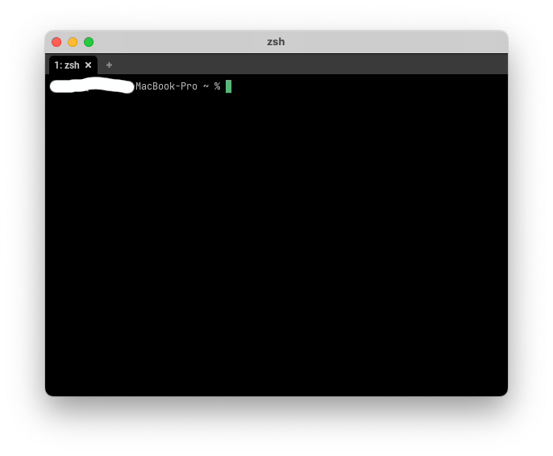
動きましたね。 まだまだ味気ないですが、設定を重ねていくと面白みが増してきます。
少し補足すると、上のスクリーンショットはWezTerm上でzshが動いている状態です。
シェルの設定なども含め、まだ何もいじっていない状態であればこんな感じになると思います1。
では、次からWezTermの設定を行なっていきましょう。
Unix だとbashが動いているでしょうか。
Configuration
特に難しいことを考えずに ホームフォルダに .wezterm.lua を置いても良いのですが、
後々ファイルを複数配置していきたくなるので、$HOME/.config/weztermというディレクトリを作って、
そこに wezterm.lua を置くほうがおすすめです😊
以下のようにしてみましょう。
もし手順が必要なら下で解説していきます😄
手順
以下のコマンドを順に実行してください。
GUI のエディタを使用したい場合は以下で出来ます。
ファイルを作る:
touch ~/.config/wezterm/wezterm.lua
ファイルを開く:
open ~/.config/wezterm/wezterm.lua
これでluaファイルに関連付けられたアプリケーションが起動するはずです。
もし、こんなのが出てきたら

アプリケーションを選択...から普段使っているエディタを選びましょう。
XcodeやVisual Studio Codeなどでもいけるはずです。
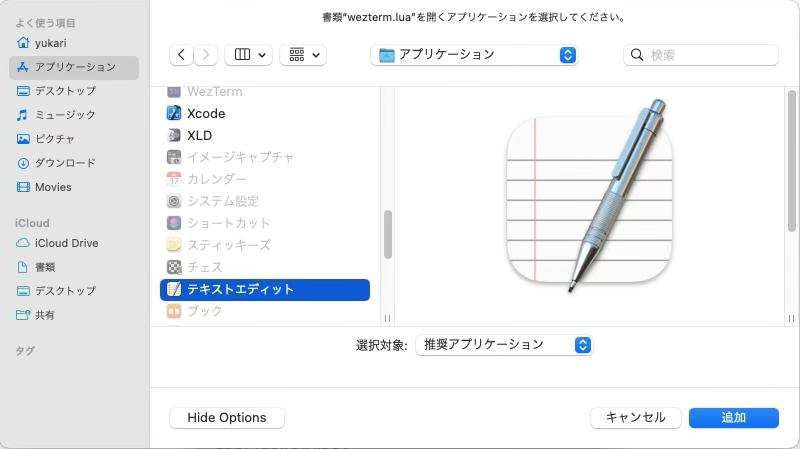
Window
ここではウィンドウの設定を行なっていきます。
Color Schemes
Wezterm では数多くのカラースキームを内蔵しているため、簡単に設定が可能です。
以下から好きなカラースキームを選んで指定します。
735 Color schemes listed by first letter
7351種類のカラースキーム一覧
お気に入りのカラースキームは見つかりましたか？
わたしはCatppuccin Mochaを愛用しているので、以下のようになりました🥰
ちなみに、このWebページのカラースキームもCatppuccinを使ってたりします。
セルフサービスなので、左上のブラシアイコンからお好みで淹れて1みてください😄
window_background_opacity
If your Operating System provides Compositing support then WezTerm is able to specify the alpha channel value for the background content
オペレーティングシステムがコンポジットをサポートしている場合、WezTerm は背景コンテンツのアルファチャンネル値を指定することができます。
透過値はお好みで。わたしはこんな感じで。
一旦確認…
さて、ここまででwezterm.luaは以下のようになりました。

カラースキームについては、白文字しかない状態だと「ちょっと何言ってるかわかんない」ですが、透過は確認できましたね😄
次は、せっかく設定したカラースキームを見たいので、少し脇に逸れてプロンプトを変えてみましょう。
誤字じゃないです。カプチーノなので❗
Shell Prompt
WezTermの設定からは少し逸れますが、先にシェルプロンプトのカスタマイズをやってしまいましょう。
Starship
技術系サイトを見ていると、こぞって紹介されている感のあるStarShipです。
まあ、これは紹介したくなりますよね〜。導入が簡単なのに綺麗だし🥴
The minimal, blazing-fast, and infinitely customizable prompt for any shell!
あらゆるシェルのための、最小限の、高速な、そして無限にカスタマイズ可能なプロンプト!
覗いてみると
Prerequisites
- A Nerd Font installed and enabled in your terminal.
前提条件
- Nerd Fontがインストールされ、ターミナルで有効になっていること。
と書いてありますね。
本来なら「なんかめんどくさそうだな〜」となるところですが...、
なんと❗️WezTermはNerd Fontを持っていて、しかも既に有効になっています❗️
WezTerm includes Nerd Font Symbols Font as a default font fallback which means that these special symbols are available even without requiring you to use a patched font.
WezTerm は Nerd Font Symbols Font をデフォルトのフォントのフォールバックとして含んでいます。 つまり、パッチを当てたフォントを使わなくてもこれらの特殊記号を利用することができます。
...とのことなので安心してください。入ってますよ☺️
とは言いつつ、わたしは別のフォントを使っているので3.3 Fontで紹介したいな〜と思ってます。
インストール
これはStarshipの説明通りにやっていけば大丈夫ですね。
Step 1.
ターミナルから
と、やってもいいのですが、わたしはHomebrewでやっちゃいます。
いきなり説明通りから外れましたね！どんまい✨
Step 2.
zshを使っている場合は~/.zshrcに以下を追記するだけです。
Step 3.
コンフィグファイルについては、また別の機会に。
WezTermを一旦終了して再度起動しましょう。
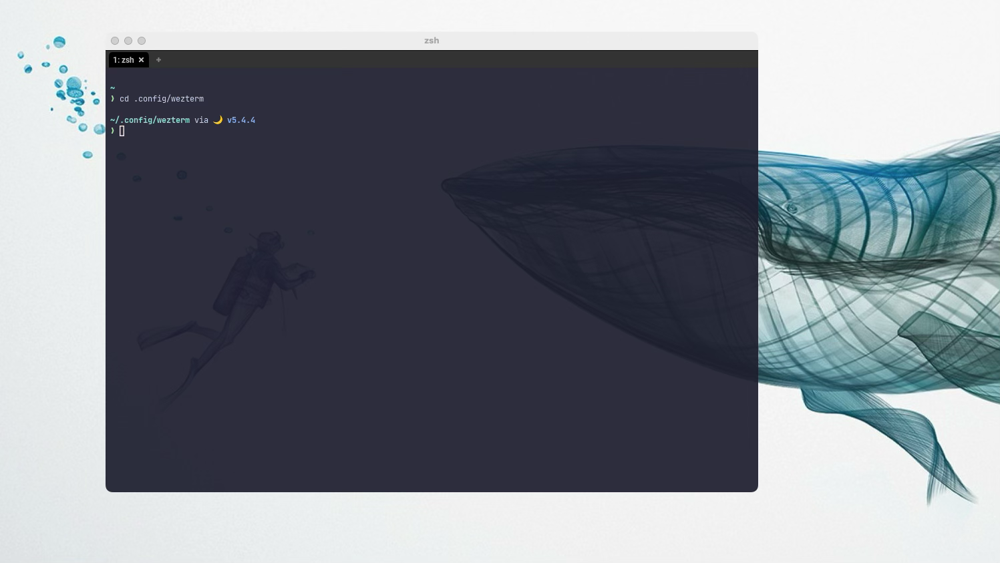
3.1 Windowで設定したカラースキームが適用されているのを確認できましたね。
Font
これはもう、ほんとに好きなフォントでいいです。
以下に再掲しますが、Starshipを使用する場合もWezTermであればNerd Fontを考慮する必要がありません😆
WezTerm includes Nerd Font Symbols Font as a default font fallback which means that these special symbols are available even without requiring you to use a patched font.
WezTerm は Nerd Font Symbols Font をデフォルトのフォントのフォールバックとして含んでおり、 これはパッチされたフォントを使わなくてもこれらの特殊記号が利用可能であることを意味します。
ただ、環境にもよるかもしれませんが、デフォルトのままだと日本語がイマイチ...😢

なんてことがあるので、次項に続くわけです。
プログラミングフォント Firge (ファージ)
例として、わたしが普段お世話になっているフォントを紹介します。
Fira Mono と源真ゴシックを合成したプログラミングフォント Firge (ファージ)
「ダウンロードはこちら」というリンクから、お言葉に甘えてFirgeNerd_v0.2.0.zipをダウンロードします。ありがとー💕
インストール
フォントのインストールは OS の作業になるので、macOSのやり方だけ軽く載せます。
...基本的にはどのOSでも、ダウンロードしてきたファイルを開けば「インストールしますか？」的なの出てきますよね。多分。
やればできる!!
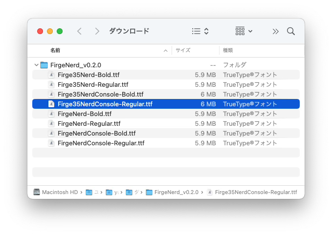
 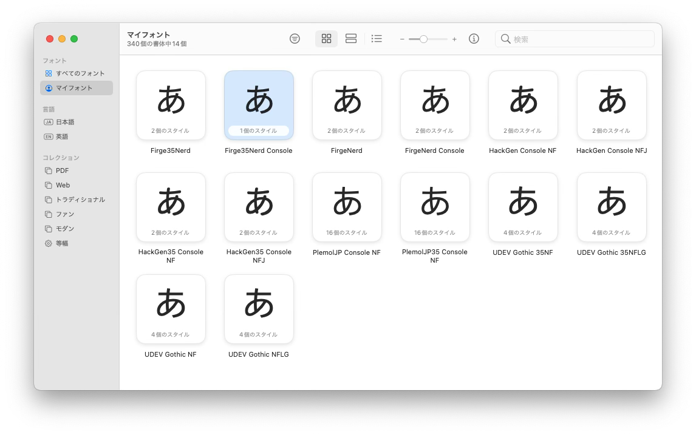
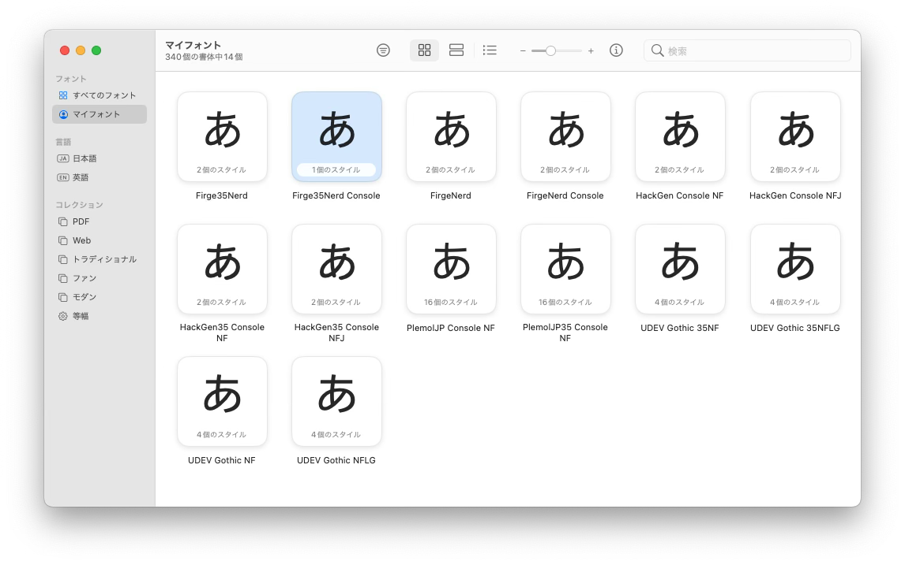
ほらできた🤗
WezTerm 設定
で、このフォントをWezTermに設定すれば良さそう。
The first parameter is the name of the font; the name can be one of the following types of names:
- The font family name, eg: "JetBrains Mono". The family name doesn't include any style information (such as weight, stretch or italic), which can be specified via the attributes parameter. This is the recommended name to use for the font, as it the most compatible way to resolve an installed font.
- The computed full name, which is the family name with the sub-family (which incorporates style information) appended, eg: "JetBrains Mono Regular”.
- (Since 20210502-154244-3f7122cb) The postscript name, which is an ostensibly unique name identifying a given font and style that is encoded into the font by the font designer.
最初のパラメータはフォントの名前です。この名前は、以下のタイプの名前のいずれかになります。
- フォントファミリ名、例："JetBrains Mono 「JetBrains Mono" のようなフォントファミリーの名前です。このファミリー名にはスタイル情報（ウェイト、ストレッチ、イタリックなど）は含まれませんが、これは属性パラメータで指定できます。これは、インストールされているフォントを解決するための最も互換性のある方法であるため、フォントに使用する推奨される名前です。
- 計算されたフルネームは、ファミリー名にサブファミリー（スタイル情報を含む）を追加したもので、例．例えば、「JetBrains Mono Regular」です。
- (20210502-154244-3f7122cb 以降) ポストスクリプト名。これは、フォントデザイナーがフォントにエンコードした、与えられたフォントとスタイルを識別する表向きユニークな名前です。
わたしはFirge35NerdConsole-Regular.ttfをインストールして、ファミリー名のFirge35Nerd Consoleで指定しています。

フォントサイズも指定できるので、一緒に入れておきましょう。
Specifies the size of the font, measured in points.
You may use fractional point sizes, such as 13.3, to fine tune the size.
フォントのサイズをポイント数で指定します。
13.3 のような小数点のサイズを使用して、サイズを微調整することができます。
上の例はデフォルト値そのままですが、お好みで調整してください。
Window Frame
コンソールがいい感じになってきたので、次はウィンドウフレーム周りの設定をしていきましょう。
This setting is applicable primarily on Wayland systems when client side decorations are in use.
この設定は、主にクライアント側の装飾が使用されているWaylandシステムで適用されます。
...いや、一回細かく変えてみたこともあったんですが、最終的にはデフォルトでいいかー😉ってなりました。
Font
これもほぼデフォルトのままで、フォントサイズだけ変える程度にしています。
前回やっているフォント設定と同じですね。
The following options affect the fancy tab bar:
次のオプションは、ファンシータブバーに影響します。
window_frame = {
-- デフォルト値のままなので記述しなくても平気ですが、後で変えたくなった時にわかりやすいので。
font = wezfont 'Roboto',
-- サイズはだいぶ小さくしちゃってます。
font_size = 8.0,
},
Fancy or Retro
前項で、突然 "ファンシータブバー" という文言が出てきましたが、WezTermのタブバーには、ファンシーとレトロの2種類があります。
When set to true (the default), the tab bar is rendered in a native style with proportional fonts.
true（デフォルト）に設定すると、タブバーはプロポーショナルフォントを使用したネイティブスタイルでレンダリングされます。
When set to false, the tab bar is rendered using a retro aesthetic using the main terminal font.
false に設定すると、タブバーはメインのターミナルフォントを使用したレトロなスタイルで表示されます。
わたしはファンシー派かなぁ😆 なので何もしません。
レトロ派の方は以下を記述しましょう。
before:
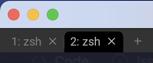
after:

Key Binding
ここはちょっと難しいというか、どこまでWezTermをメインに持ってくるのかみたいなところがあります。
例えばtmux。
WezTerm自体がtmuxと同等かそれ以上の機能を持っているので、
WezTermに対してtmuxと同じキーバインドを与えてしまえば、これは不要になるわけです。1
と言ってもわたしがローカルでしか使っていないから大丈夫なだけで、ネットワークを介して使う場合は困る事もあるかもしれませんし、 実際にデフォルトでは徹底的に他のソフトウェアとの衝突を避けています。
The default key assignments are shown in the table.
デフォルトのキー割り当ては、表のとおりです。
現在のキーバインド確認
まずは現在のキーバインドがどうなっているのかを確認します。
Prints the complete set of key assignments based on your config file.
設定ファイルに基づいたキー割り当ての完全なセットを表示します。
実行してみましょう。WezTermでそのままweztermコマンドを使えば良いです。

そう、これが現在のキーバインドですね。
設定を落とし込む
で、ここで提案なんですが、キーバインドを自分の設定ファイルに落とし込んじゃったらどうかな？と思うわけです。
それをやるにはどうすれば簡単かな〜っていう話になるんですけど、方法はすでにありました。
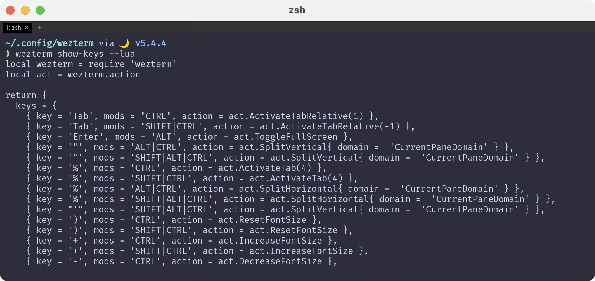
さすがですね☺️ もはやレールは存在していました。これを自分の設定に持っていけば良いだけです。
ということで、keybinds.luaとでもしてここに設定を落とし込みます。
これはもうプロっぽく片付けちゃいましょう。シェル芸というやつです✨
>を使って出力先をファイルにすると、もうこれだけで流し込めちゃうんですね。簡単😆
むしろ同名ファイルが存在している場合は完全に上書きしちゃうみたいなので注意❗
また、上記例のファイル出力先は現在のディレクトリです。
~/.config/weztermに移動するか、出力先を~/.config/wezterm/keybinds.luaに指定してください。
読み込み先を切り替える
ここまでは暗黙的にデフォルト設定が適用されていましたが、これからは自分で作ったkeybinds.luaを使っていきましょう。
このサイトではまだ取り扱っていませんが、
Key Tables
という機能があって、これをkeybinds.lua内でカスタマイズしても、このままでは反映されません。
なのでごめんなさい😱 上のコードだけでは混乱の元になってました😭
keybinds.lua内でKey Tablesのカスタマイズをする場合、以下のコードも必要になります。
key_tables = require('keybinds').key_tables,
これで、keybinds.lua内で編集したKey Tablesがちゃんと反映されるようになります🥹
冒頭のリンクを再掲しますが、一番下にこのようにあります。
If you don't want the default assignments to be registered, you can disable all of them with this configuration; if you chose to do this, you must explicitly register every binding.
デフォルトの割り当てを登録したくない場合は、この設定ですべての割り当てを無効にできます。これを選択した場合は、すべてのバインディングを明示的に登録しなければなりません。
デフォルト設定は以下で完全に無効化されます。不安に感じるようであればスキップしても大丈夫です。
実際、わたしもWezTermを使う前はiTerm2の上でtmuxを動かしていました。
Leader Key
さて、前回はキーバインドを落とし込んだわけですが、今回はLeaderキーです。
A leader key is a a modal modifier key. If leader is specified in the configuration then pressing that key combination will enable a virtual LEADER modifier.
Leaderキーは、モーダルモディファイアキーです。Leaderキーが設定されている場合、そのキーの組み合わせを押すと、仮想的なリーダーモディファイアが有効になります。
Leaderキーという概念はWezTerm特有のものではく、tmuxやvimなど古参のソフトウェアでも用いられています。
WezTerm でのデフォルトはCTRL-aです。1
ということで、わたしはもうそのままCTRL-aで設定しています。
デフォルトのままでいいやー、って場合は書かなくてもOKです。
vimやtmux等を使用する場合は、これとバッティングしていないかチェックしときましょう。
macOSでUS配列なのに日本語IME使うような環境2ではCTRL-Spaceが入力ソースの切り替えに割り当てられています。
OSのショートカットキー等も含め、あらかじめ確認しておきましょう。
他のと被っちゃうと困っちゃいます。
timeout_milliseconds
これは前項で挙げたマニュアルの文章を引用しますが、
LEADER stays active until a keypress is registered (whether it matches a key binding or not),
or until it has been active for the duration specified by timeout_milliseconds, at which point it will automatically cancel itself.
LEADERはキーが登録されるまで（キーバインディングにマッチするかどうかに関わらず）、 あるいはtimeout_millisecondsで指定された時間だけアクティブになり、その時点で自動的にキャンセルされます。
Leaderキーが一回押されたら、とりあえず何か次のキーが押されるか、指定ミリ秒経過するまでは待つよ〜。ってことですね。
例えば、
...と、やる場合、CTRL-a → uと順番にキーを押す必要があるわけですが、
デフォルトでは、CTRL-aからuを押すまでが 1000ミリ秒( = 1秒)以内で完結しないといけないわけです。
1秒を長いと見るか短いと見るかは人それぞれなので、これをお好みに調整できるのが、前項のtimeout_millisecondsです。
で、もう一回キーバインド
さて、皆さんはお気づきだろうか…。
デフォルトのキー設定ではLeaderキーなんて一切使われていないことに…😱
例えばこれ。
{ key = '"', mods = 'ALT|CTRL', action = act.SplitVertical{ domain = 'CurrentPaneDomain' } },
{ key = '%', mods = 'ALT|CTRL', action = act.SplitHorizontal{ domain = 'CurrentPaneDomain' } },
ALT|CTRLはAltキーとCtrlキーを同時押しです。
さらに"を押せと言われればShiftキーを押しながら'です。3
それだったら、下のようにしたほうが楽じゃないですか？
{ key = '"', mods = 'LEADER', action = act.SplitVertical { domain = 'CurrentPaneDomain' } },
{ key = '%', mods = 'LEADER', action = act.SplitHorizontal { domain = 'CurrentPaneDomain' } },
tmuxと同じキーバインドですね。ペイン操作もWezTermに一任しちゃいます。
tmux使ってないのに同等の機能が実現できちゃうんですよ⁉️？すごくないです?☺️
もしどこかでtmuxを使うことがあっても同一操作なので迷わず使えます、たぶん❗
さらにタイムリーなことに、Copy Modeの各種jump機能も実装されてました。(9/22時点ではnightly buildだけです。)
update docs for new copy-mode functions
tmuxのキーバインドを完全に真似るのであれば、CopyModeに入るキーバインドはこれですね。
{ key = '[', mods = 'LEADER', action = act.ActivateCopyMode },
jump機能はデフォルトのままでtmuxと同じキーバインドが割り当てられているようなので、そのままいけます。4
ということで、キーバインドは色々試してみてほしいです。
A KeyAssignment represents a pre-defined function that can be applied to control the Window, Tab, Pane state typically when a key or mouse event is triggered.
KeyAssignment は、キーまたはマウス イベントがトリガーされたときに、通常 Window、Tab、Pane の状態を制御するために適用できる事前定義された関数を表します。
tmux のデフォルトは CTRL-b、vimのデフォルトは\です。
ちょっと遠い位置に置かれていて大変なので、 Leaderキーのカスタマイズは一般的に行われているみたいです。
メジャーなカスタマイズ先はCTRL-aや、CTRL-j、CTRL-,(カンマ)、CTRL-Spaceあたりでしょうか？
色んな意味で少数派なんですけどね。わたしもこの環境です。
USキーボードの場合。
3.5 Keybindで「いや、デフォルトのキーバインド無効にしたじゃないかー👿」と思われた方、ごもっともです...。
実はcopy-modeのキーバインドには触れていませんでした。ちょっとこの辺、複雑ですよね...。また今度改編します。
Format
次はウィンドウタイトルとタブを飾り付けていこうかなーと思うのですが、
まずはformat.luaとでもして、またファイルを作成しましょう。
で、これをwezterm.luaから呼び出します。
Window Title
format.luaに、以下のコードを追記していきましょう。1
local wezterm = require 'wezterm'
local function BaseName(s)
return string.gsub(s, '(.*[/\\])(.*)', '%2')
end
wezterm.on('format-window-title', function(tab)
return BaseName(tab.active_pane.foreground_process_name)
end)
この節のポイントはwezterm.on(event_name, callback)です。
wezterm.on causes your specified callback to be called when event_name is emitted. Events can be emitted by wezterm itself, or through code/configuration that you specify.
wezterm.on は、event_name が発生したときに指定したコールバックを呼び出します。イベントは wezterm 自身によって、またはあなたが指定したコード/設定によって発行されます。
この例で言うと、format-window-titleという名前のイベントが発生したら、ここで定義したfuncttionが呼ばれるという動作をします。
The format-window-title event is emitted when the text for the window title needs to be recomputed.
format-window-titleイベントはウィンドウタイトルのテキストを再計算する必要がある場合に発行されます。
再計算と言うよりは再描画というニュアンスに近いでしょうか。
要するにこのイベントが発生した際にウィンドウタイトルとして表示するテキストを指定します。抜粋すると以下の部分ですね。
function(tab)
return BaseName(tab.active_pane.foreground_process_name)
end
無名関数というやつです。
これがBaseName関数にプロセス名を渡して、正規表現で加工された文字列を返しています。
わたしが正規表現の理解に乏しいので説明できませんが、この例では純粋に実行アプリケーション名だけを取り出しています...よね？
before:

after: 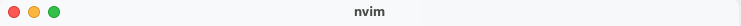
すみません、これ (↑) タイトルバーです...。
なんか偉そうでした。wez さんのサンプル、丸パクリです...。
Tab
さて、引き続きformat.luaに追記していきましょう。今回はタブタイトルです。
local HEADER = '' -- 文字化けしちゃってるかもしれませんが、アイコンフォント入ってます。
local SYMBOL_COLOR = { '#ffb2cc', '#a4a4a4' }
local FONT_COLOR = { '#dddddd', '#888888' }
local BACK_COLOR = '#2d2d2d'
local HOVER_COLOR = '#434343'
wezterm.on('format-tab-title', function(tab, tabs, panes, config, hover, max_width)
local index = tab.is_active and 1 or 2
local bg = hover and HOVER_COLOR or BACK_COLOR
local zoomed = tab.active_pane.is_zoomed and '🔎 ' or ' '
return {
{ Foreground = { Color = SYMBOL_COLOR[index] } },
{ Background = { Color = bg } },
{ Text = HEADER .. zoomed },
{ Foreground = { Color = FONT_COLOR[index] } },
{ Background = { Color = bg } },
{ Text = tab.active_pane.title },
}
end)
これもウィンドウタイトルと同じように、wezterm.onを使ってformat-tab-titleイベントの処理を書いています。
色は適宜調整してください。
The format-tab-title event is emitted when the text for a tab title needs to be recomputed.
format-tab-title イベントは、タブタイトルのテキストを再計算する必要があるときに発行されます。
これもウィンドウタイトルとほぼ同じですね。
所々で状態によって表示するものを変えていますが、やっていることはzoomedとhoverの可視化ですね🤩
タブタイトル
上にある例では表示する内容は特に加工していませんが、前回作ったBaseNameに通すのもスッキリしてオススメです。
Zoomed
ズーム中はタブに 🔎 アイコンを表示してます。
Toggles the zoom state of the current pane. A Zoomed pane takes up all available space in the tab, hiding all other panes while it is zoomed.
現在のペインのズーム状態をトグルします。 ズームされたペインは、タブ内で利用可能な全てのスペースを占め、ズーム中は他のペインが全て非表示になります。
デフォルトのキーバインドだとズーム機能が割り当てられていないと思うので、keybinds.luaに入れておきましょう。
使い方としてはまあ、こんな感じになってたとして...
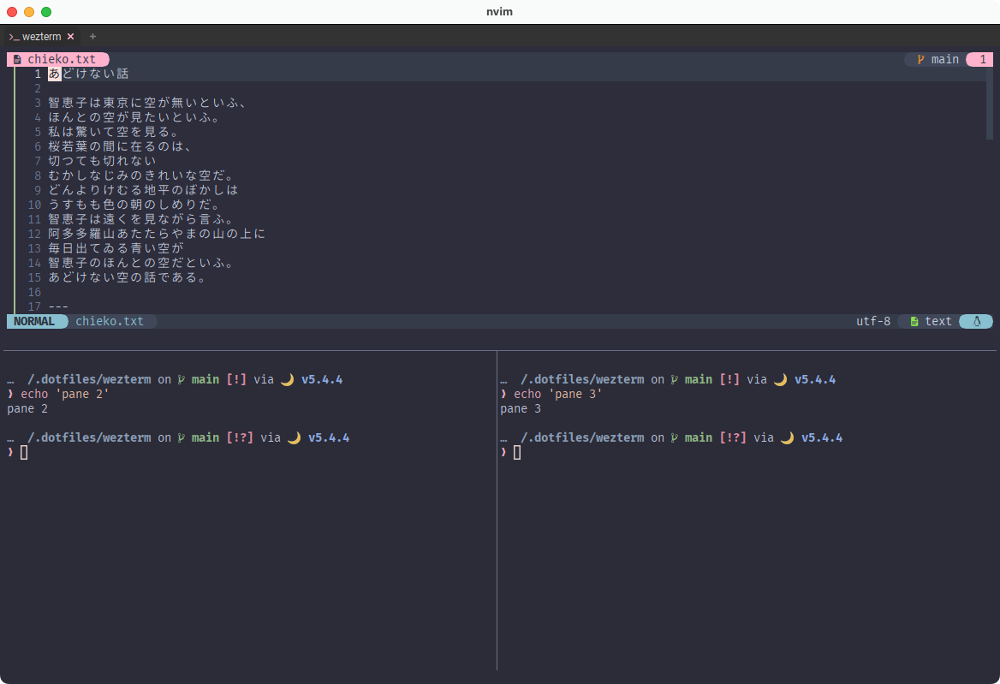
上のペインにいる状態でズームすると...
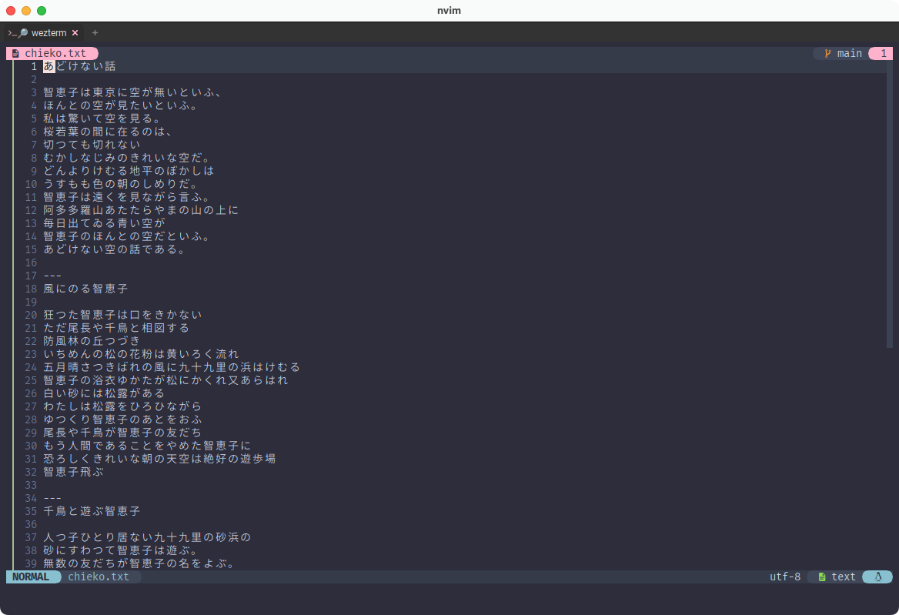
"ズーム中は他のペインが全て非表示になります。"というドキュメントどおり😏
左上に 🔎 アイコンが出ていることも確認できましたね。
もう一度同じ操作で戻ります。
(ペイン操作については3.6 Leader Keyでふわっと話題にしました。)
Hover
ホバー中は該当のタブ背景色を少し変えてます。
true if the current tab is in the hover state
現在のタブがホバー状態である場合に true を返します。
少しluaのお話
local SYMBOL_COLOR = { '#ffb2cc', '#a4a4a4' }
local FONT_COLOR = { '#dddddd', '#888888' }
local index = tab.is_active and 1 or 2
{ Foreground = { Color = SYMBOL_COLOR[index] } },
lua の配列は[1]始まりなので、(Cとかは[0]から始まりますよね。)
三項演算子local index = tab.is_active and 1 or 2によってSYMBOL_COLOR配列とFONT_COLOR配列それぞれから採用する色を切り替えます。
else節を消せるだけ消す書き方、わたしは好きなんですがどうでしょう😆
Status Bar
今度はステータスバーを飾り付けちゃおっかなーと思います😆
status.luaというファイルを追加しましょう。
local wezterm = require 'wezterm'
wezterm.on('update-status', function(window, pane)
end)
もうお馴染みですね😉 wezterm.luaから読み込みましょう。
さて、wezterm.onを利用してupdate-statusイベントをフックします。
The update-status event is emitted periodically (based on the interval specified by the status_update_interval configuration value).
There is no defined return value for the event, but its purpose is to allow you the chance to carry out some activity and then ultimately call window:set_right_status or window:set_left_status.
update-status イベントは定期的に発行されます (status_update_interval 設定値で指定された間隔に基づく)。
このイベントの戻り値は定義されていませんが、その目的は、何らかの活動を行い、最終的に window:set_right_status または window:set_left_status を呼び出す機会を提供することです。
とのことなので、wezterm.luaの中でステータス更新間隔を指定しておきましょう。
Specifies the number of milliseconds that need to elapse between triggering the update-right-status hook.
update-right-status フックのトリガーとなるまでに必要なミリ秒を指定します。
デフォルトは1000ミリ秒(=1秒)です。そのままで良ければ必要ありません。
Left Status
まずはステータスバーの左側を活用していきましょう😆
キーボード状態
わたしが使っているのはキーボード状態です。ひとまずコードはこんな感じ。
local DEFAULT_FG = { Color = '#9a9eab' }
local DEFAULT_BG = { Color = '#333333' }
local SPACE_1 = ' '
local SPACE_3 = ' '
local HEADER_KEY_NORMAL = { Foreground = DEFAULT_FG, Text = '' }
local HEADER_LEADER = { Foreground = { Color = '#ffffff' }, Text = '' }
local HEADER_IME = { Foreground = DEFAULT_FG, Text = 'あ' }
local function AddIcon(elems, icon)
table.insert(elems, { Foreground = icon.Foreground })
table.insert(elems, { Background = DEFAULT_BG })
table.insert(elems, { Text = SPACE_1 .. icon.Text .. SPACE_3 })
end
local function GetKeyboard(elems, window)
if window:leader_is_active() then
AddIcon(elems, HEADER_LEADER)
return
end
AddIcon(elems, window:composition_status() and HEADER_IME or HEADER_KEY_NORMAL)
end
SPACE_3とかは自分でもちょっとマヌケだとは思ってますが、なんかごめんなさい...😿
まだupdate-statusと繋いでないので動きませんが、ここで一旦区切って補足します。
ここでは以下の状態を可視化します。
leaderキーアクティブ- IME
Leaderキーアクティブ
まずはleaderキーの状態を以下で取得します。
Returns true if the Leader Key is active in the window, or false otherwise.
リーダーキーがウィンドウ内でアクティブな場合はtrueを、そうでない場合はfalseを返します。
上のコード例では、leaderキーがアクティブである場合はIMEよりも優先して表示します。
IME状態
次にIME状態です。
Returns a string holding the current dead key or IME composition text, or nil if the input layer is not in a composition state.
This is the same text that is shown at the cursor position when composing.
現在のデッドキーまたはIMEのコンポジションテキストを保持する文字列、または入力レイヤーがコンポジション状態でない場合はnilを返します。
これは、コンポジション時にカーソル位置に表示されるテキストと同じものです。
コンポジションって何だ？🤔と思われるかもしれませんが、わたしも思ってます。
でも、この状態を指すようです。

ちょっとフライングしてますが、左上にあと出てるのがcomposition_status()でnil以外が返ってきている状態です。
(nilでない場合は文字列が入りますが、この例では使用していません。)
さて、それではupdate-statusに繋ぎ込みましょう😄
local function LeftUpdate(window, pane)
local elems = {}
GetKeyboard(elems, window)
window:set_left_status(wezterm.format(elems))
end
wezterm.on('update-status', function(window, pane)
LeftUpdate(window, pane)
end)
normal:

leader key is active:
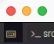
composition:
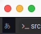
Right Status
これはもう手厚いサンプルが既に用意されているので、この通りに書けばバッチリです😆 やったね❗️
This method can be used to change the content that is displayed in the tab bar, to the right of the tabs and new tab button.
このメソッドを使用すると、タブバー内のタブと新規タブボタンの右側に表示される内容を変更することができます。
Get Parameter
まずは wez さんのサンプルコードをほぼ丸写しですが、一つずつ機能を分けます。
local function GetHostAndCwd(elems, pane)
local uri = pane:get_current_working_dir()
if not uri then
return
end
local cwd_uri = uri:sub(8)
local slash = cwd_uri:find '/'
if not slash then
return
end
local host = cwd_uri:sub(1, slash - 1)
local dot = host:find '[.]'
AddElement(elems, HEADER_HOST, dot and host:sub(1, dot - 1) or host)
AddElement(elems, HEADER_CWD, cwd_uri:sub(slash))
end
local function GetDate(elems)
AddElement(elems, HEADER_DATE, wezterm.strftime '%a %b %-d')
end
local function GetTime(elems)
AddElement(elems, HEADER_TIME, wezterm.strftime '%H:%M')
end
local function GetBattery(elems, window)
if not window:get_dimensions().is_full_screen then
return
end
for _, b in ipairs(wezterm.battery_info()) do
AddElement(elems, HEADER_BATTERY, string.format('%.0f%%', b.state_of_charge * 100))
end
end
wez さんのサンプルでは一度に取得していたdateとtimeも分けちゃってます。
程度は分かりませんが、非効率ではあると思われるのでお好みで😉
バッテリー表示については、わたしの場合はフルスクリーンの時だけ出しています。スクリーン状態は下記で取得できます。
The table has the following fields:
- pixel_width: the width of the window in pixels
- pixel_height: the height of the window in pixels
- dpi: The DPI of the screen the window in on
- is_full_screen: whether the window is in full screen mode
テーブルには以下のフィールドがあります:
- pixel_width: ピクセル単位のウィンドウの幅
- pixel_height: ピクセル単位で表したウィンドウの高さ
- dpi: ウィンドウが表示されているスクリーンの DPI
- is_full_screen: ウィンドウがフルスクリーンモードであるかどうか
ここではis_full_screenを使います。フルスクリーン時はtrueが返ります。
OSからのフルスクリーン操作、もしくは
WezTermのToggleFullScreen
に反応します。

(以前、ToggleFullScreenだと反応しないと書いていましたが、今見たらちゃんと動いてました☺️)
で、以下が足りていなかった定義です。
-- ここもやっぱりアイコン入れてます
local HEADER_HOST = { Foreground = { Color = '#75b1a9' }, Text = '' }
local HEADER_CWD = { Foreground = { Color = '#92aac7' }, Text = '' }
local HEADER_DATE = { Foreground = { Color = '#ffccac' }, Text = '' }
local HEADER_TIME = { Foreground = { Color = '#bcbabe' }, Text = '' }
local HEADER_BATTERY = { Foreground = { Color = '#dfe166' }, Text = '' }
local function AddElement(elems, header, str)
table.insert(elems, { Foreground = header.Foreground })
table.insert(elems, { Background = DEFAULT_BG })
table.insert(elems, { Text = header.Text .. SPACE_1 })
table.insert(elems, { Foreground = DEFAULT_FG })
table.insert(elems, { Background = DEFAULT_BG })
table.insert(elems, { Text = str .. SPACE_3 })
end
(前のページで書いた定義も使用しているので、無かったら以下も追記してください。)
local DEFAULT_FG = { Color = '#9a9eab' }
local DEFAULT_BG = { Color = '#333333' }
local SPACE_1 = ' '
local SPACE_3 = ' '
引っ張った割には特にコメントするところもないですね...。そのまま完成させちゃいましょう😊
local function RightUpdate(window, pane)
local elems = {}
GetHostAndCwd(elems, pane)
GetDate(elems)
GetBattery(elems, window)
GetTime(elems)
window:set_right_status(wezterm.format(elems))
end
wezterm.on('update-status', function(window, pane)
LeftUpdate(window, pane) -- 前回書いたコードはそのままで。
RightUpdate(window, pane)
end)
さて、これでこんな感じになったはずなんですがどうでしょう❓(例によってユーザー名は雑に隠してます。)

フルスクリーン時にはバッテリー表示がされていることも確認できます。

Custom Event
さて、一通り片付いたかな〜って感じなので、ここは付録みたいなものです🥳
お付き合いいただける方はevent.luaとでもしてまたファイルを作成しましょう。
これもまたお馴染みですが、wezterm.luaから呼び出しましょう。
Toggle Font
ここではわたしが使っている機能実装を紹介します。
環境によっては全く必要ないと思いますので、その場合はスキップしてください😅
まず前提
わたしのディスプレイ環境なんですが、MacBook と 4K を行ったり来たりして使っています。
だからなんだって言われるとキツイんですが、一番わかりやすいところでフォントサイズの問題があって、画面のスケールが違いすぎて大きすぎたり小さすぎたりしてしまう...😢


DecreaseFontSize・ IncreaseFontSize を使ってサイズを上げ下げしてもいいんですが、ちょっとコレじゃない...😒
わたしはこれが結構ストレスになっていたので、 この問題を解消するのに有用なのが、次のフォント切り替え機能です😃
フォントサイズ切り替え
この例ではtoggle-font-sizeというイベントを独自に作っています。
WezTermでは、フォントサイズに限らず、元の設定を直接書き換えるのではなく、オーバーライドすることで変化させます。
Returns a copy of the current set of configuration overrides that is in effect for the window.
ウィンドウに適用されている設定オーバーライドの現在のセットのコピーを返します。
local wezterm = require 'wezterm'
wezterm.on('toggle-font-size', function(window, pane)
local overrides = window:get_config_overrides() or {}
overrides.font_size = not overrides.font_size and 10.0 or nil
window:set_config_overrides(overrides)
end)
端的に言えば、以下の動作を交互に行っています。
- 素の状態であれば、
font_sizeを10.0でオーバーライド。 - オーバーライドされているのであれば、
font_sizeをnilとしてオーバーライドを無効化 (素の状態に戻す)。
これでフォントサイズの切り替えが実現できます。
独自イベントが呼び出されるようにするにはEmitEventを用います。
This action causes the equivalent of wezterm.emit(name, window, pane) to be called in the context of the current pane.
このアクションは、現在のペインのコンテキストで wezterm.emit(name, window, pane) と同等のアクションが呼び出されるようにします。
わたしはキーバインドctrl-fをトリガーとして呼び出しています。
まあ、思いっきり手動なんですけどね😅 自動で出来たら面白いんですけどね。
素の状態: 1

切り替えた状態: 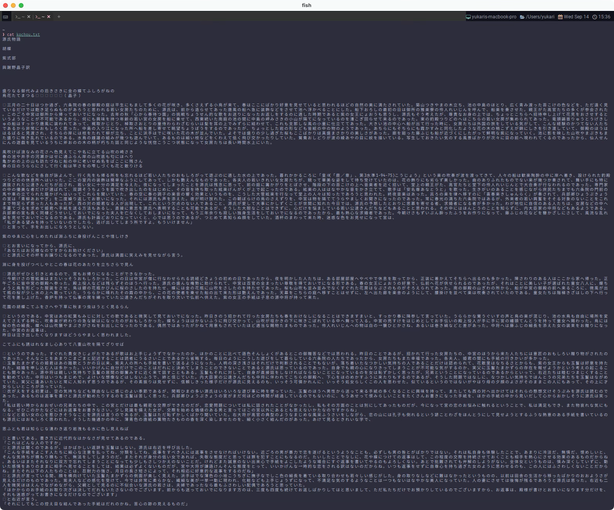
さらにフォントサイズを大きくして説明用に誇張しています。が、まだなんか中途半端でしたね。
DPI Detection
前回は手動でフォントサイズの切り替えを行いましたが、今回はこれをdpiの変更を検知して自動で切り替わるようにします。
今後の仕様追加・変更によって、より自然に実現できるかもしれませんね〜、などと書いていたら、
window-focus-changedが実装されました🤩
ここでは、二つのプランとして紹介します。おすすめは Plan B です。
実装 - Plan A
さて、これまでにも何度か出てきていたwezterm.onですが、以下のような説明がありました。
wezterm.on can register multiple callbacks for the same event; internally an ordered list of callbacks is maintained for each event. When the event is emitted, each of the registered callbacks is called in the order that they were registered.
wezterm.on は、同じイベントに対して複数のコールバックを登録することができます; 内部的には、各イベントに対してコールバックの順序付きリストが維持されます。 イベントが発信されると、登録された各コールバックは、登録された順に呼び出されます。
これを踏まえた上で、update-statusをもう一個作ります。1
There is no defined return value for the event, but its purpose is to allow you the chance to carry out some activity and then ultimately call window:set_right_status or window:set_left_status.
このイベントの戻り値は定義されていませんが、その目的は、何らかの活動を行い、最終的に window:set_right_status または window:set_left_status を呼び出す機会を提供することです。
説明にもある通り、「最終的にwindow:set_right_statusまたはwindow:set_left_statusを呼び出す目的」のものであるため、
なんかコレじゃないとは思っていますが、他に方法が見つけられませんでした😢
それではevent.luaに追記していきます。
local DPI_CHANGE_NUM = 140
local DPI_CHANGE_FONT_SIZE = 10.0
local prev_dpi = 0
wezterm.on('trigger-dpi', function(window, dpi)
local overrides = window:get_config_overrides() or {}
overrides.font_size = dpi >= DPI_CHANGE_NUM and DPI_CHANGE_FONT_SIZE or nil
window:set_config_overrides(overrides)
end)
wezterm.on('update-status', function(window, pane)
local dpi = window:get_dimensions().dpi
if dpi == prev_dpi then
return
end
wezterm.emit('trigger-dpi', window, dpi)
prev_dpi = dpi
end)
dpiとfont_size周辺の値はわたしの環境にあわせてぼや〜っと決め打ちにしてるので適宜調整してください。
動作としては、dpiに変更があったらカスタムイベントのtrigger-dpiを呼んでフォントサイズを切り替えます。
trigger-dpi自体は手動でフォントサイズを切り替える処理とほぼ同じですね☺️
理由はちょっとよくわからなかったのですが、
カスタムイベントに渡したwindowに対してのget_config_overrides().dpiが上手くいかなかったので、
wezterm.emit('trigger-dpi', window, dpi)としてdpiも渡しています。
実装 - Plan B
さて、Plan A よりも自然に目的を達成できそうな、これ。
The window-focus-changed event is emitted when the focus state for a window is changed.
This event is fire-and-forget from the perspective of wezterm; it fires the event to advise of the config change, but has no other expectations.
window-focus-changed イベントは、ウィンドウのフォーカス状態が変更されたときに発行されます。
このイベントは wezterm の観点からは fire-and-forget です; それは設定変更を通知するためにイベントを発生させますが、それ以外のことは期待できません。
それでは満を持して😌
wezterm.on('window-focus-changed', function(window, pane)
local dpi = window:get_dimensions().dpi
if dpi == prev_dpi then
return
end
local overrides = window:get_config_overrides() or {}
overrides.font_size = dpi >= DPI_CHANGE_NUM and DPI_CHANGE_FONT_SIZE or nil
window:set_config_overrides(overrides)
prev_dpi = dpi
end)
コードについては やっぱりtrigger-dpiとほぼ同じなので割愛。
Plan A との比較ではupdate-statusを使わなくて良くなったのと、カスタムイベントの呼び出しも無くなりました。
ウィンドウをドラッグしたりウィンドウマネージャー等を使ってディスプレイを移した際に切り替わらないという欠点こそあるものの、 とても綺麗な実装になりました😄
まとめ
上にも書きましたが、Plan B は10/12 時点で nightly builds only です。
それ以外はほとんど問題にならないと思われますが、 頻繁にディスプレイを切り替えるような使い方をする場合は Plan A の方が有用かもしれないので、ひとまず Tips として残しておきます。
ステータスバーの飾り付けの際にも使用しましたね。
Window Decorations
なんか、こんなものがあるらしい...🤔
Configures whether the window has a title bar and/or resizable border.
ウィンドウにタイトルバーとリサイズ可能なボーダーを設けるかどうかを設定する。
パラメータは、このように示されていますね。
| flag | description |
|---|---|
| "NONE" | disables titlebar and border (borderless mode) タイトルバーとボーダーを無効にします（ボーダーレスモード）。 |
| "TITLE" | disable the resizable border and enable only the title bar サイズ変更可能なボーダーを無効にし、タイトルバーのみを有効にします。 |
| "RESIZE" | disable the title bar but enable the resizable border タイトルバーを無効にし、サイズ変更可能なボーダーを有効にします。 |
| "TITLE | RESIZE" | Enable titlebar and border. This is the default. タイトルバーとボーダーを使用可能にします。これはデフォルトです。 |
タイトルバーを無効にするのはなんか面白そう。
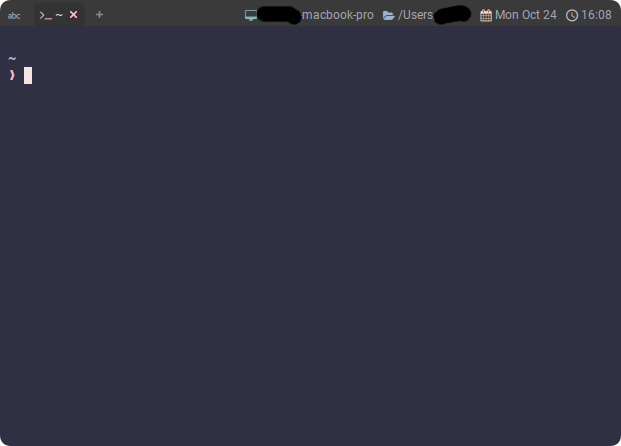
...いいね❗🤩
あー、でも、わたしたまにマウス操作で最小化ボタン使いたくなることあんだよねー、ちょっと辛い😅
今回はごめんなさいかなー。
...。
...。
なんて言うわけないじゃん⁉️😝
Configuring Mouse Assignments
You can define mouse actions using the mouse_bindings configuration section:
マウスアクションは、mouse_bindings設定セクションを使用して定義することができます:
またちょっとファイルを分けましょう。mousebinds.luaみたいな。
もうこのまま中身まで書いちゃいます😸
local act = require('wezterm').action
return {
mouse_bindings = {
{
event = { Down = { streak = 1, button = 'Left' } },
mods = 'NONE',
action = act.EmitEvent 'show-title-bar',
},
},
}
カスタムイベントはevent.luaの方にまとめます。
wezterm.on('show-title-bar', function(window, pane)
local overrides = window:get_config_overrides() or {}
overrides.window_decorations = 'TITLE | RESIZE'
window:set_config_overrides(overrides)
end)
いつも通り、wezterm.luaから読み込みます。keybindsと同じ流れ😌
これで一回動かしてみましょう。ウィンドウをクリックすると...、
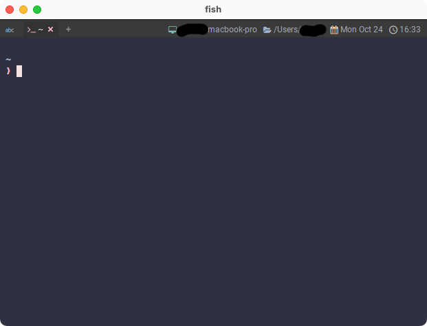
タイトルバーが現れました。やったね😆
例えばNeovimみたいな、マウス操作に対応しているアプリケーションを動かしてる時だと、
そちらに操作を奪われてしまうようで、タイトルバーは現れません。
Neovimであれば、以下のようにすればマウス操作を無効化できるので、この状態ならバッチリです👍
vim.opt.mouse = ''
ただ、マウス操作で手軽に文章を拾いたいことがあるので、わたしは入れてません🥳
でもこれだけだと、出したら出しっぱなしでなんか締まりませんね😮
やっぱり今回はごめんなさいかなー。
...。
...。
なんて言うわけないじゃん⁉️😝
ここでも window-focus-changed
function DisableWindowDecorations(window, interval)
if interval then
wezterm.sleep_ms(interval)
end
local overrides = window:get_config_overrides() or {}
overrides.window_decorations = nil
window:set_config_overrides(overrides)
end
wezterm.on('window-focus-changed', function(window, pane)
if window:is_focused() then
return
end
DisableWindowDecorations(window)
end)
はい。ウィンドウのフォーカスを外すと引っ込むようにしてみました。
あ、前のページでも挙げてましたが、wezterm.onは同じイベントがいくつ被っても平気です😉
こんなんなんぼあってもええですからね。
wezterm.on can register multiple callbacks for the same event; internally an ordered list of callbacks is maintained for each event. When the event is emitted, each of the registered callbacks is called in the order that they were registered.
wezterm.on は、同じイベントに対して複数のコールバックを登録することができます; 内部的には、各イベントに対してコールバックの順序付きリストが維持されます。 イベントが発信されると、登録された各コールバックは、登録された順に呼び出されます。
え❓😮 DisableWindowDecorationsにあるintervalは何かって❓
かなわんなあ。最初に記述したshow-title-barイベントに少しだけ手を加えましょ😄
-- これを追加して...、
local TITLE_BAR_DISPLAY_TIME = 3000
wezterm.on('show-title-bar', function(window, pane)
local overrides = window:get_config_overrides() or {}
overrides.window_decorations = 'TITLE | RESIZE'
window:set_config_overrides(overrides)
-- これも追加する
DisableWindowDecorations(window, TITLE_BAR_DISPLAY_TIME)
end)
これでTITLE_BAR_DISPLAY_TIME時間経過後、勝手に消えるようになってるはずです。どうでしょう😆
え❓😮 DisableWindowDecorationsにあるsleep_ms()は何かって❓
かなわんなあ。ちょっと不自然な気がするけど、これしか無かってん...😿
wezterm.sleep_ms suspends execution of the script for the specified number of milliseconds. After that time period has elapsed, the script continues running at the next statement.
wezterm.sleep_ms は、指定されたミリ秒の間、スクリプトの実行を一時停止します。 その時間が経過した後、スクリプトは次の文で実行を継続する。
他になんかもっとええのあったら教えてな〜☺️
うちな〜、Raycast1のWindowManagement使てんねんけど、よーこんな感じできっちりウィンドウ詰めるやろ〜❓
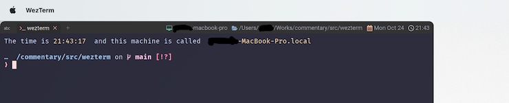
タイトルバー出すやろ〜❓
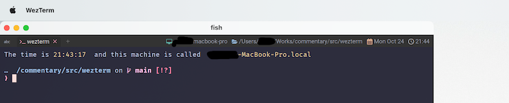
そんでな〜、引っ込んだらこんなんなんねん。
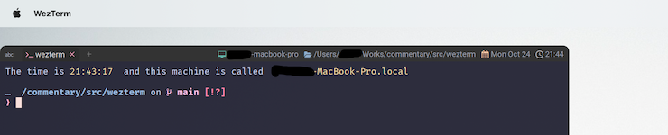
なんでやねん🫱
...あれ❓上の問題、出たり出なかったりする...。なにが違うねんな〜❗
Installation
さてさて、ここからはNeovimを扱っていきます。
これもやっぱりHomebrewや、ホームページ上で提供されている実行ファイルをダウンロードする方法があります。
You can install Neovim from download, package, or source in just a few seconds.
ダウンロード、パッケージ、ソースから、わずか数秒でNeovimをインストールすることができます。
わたしはと言うと、Homebrewからdevelopment versionを使用しています。
WezTermもそうでしたが、NeoVimもそれ以上に活発なプロジェクトなのでなんか楽しいです😆
ここに書いてあることは全てdevelopment versionで動かしていますが、
割と最近(2022/10)になってstable releaseがv0.8.0に更新されたこともあり、そんなに顕著な差が出ることはないと思ってます。
なんて思ってましたが環境によっては結構ラグあるんですね...😿 (Oct 15 時点)
0.8.0だよね〜❗の図↓:
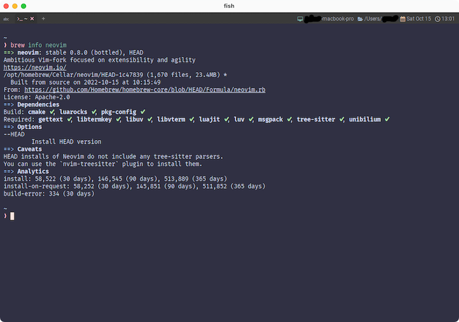
0.7.2-3.el9だって〜⁉️の図↓:
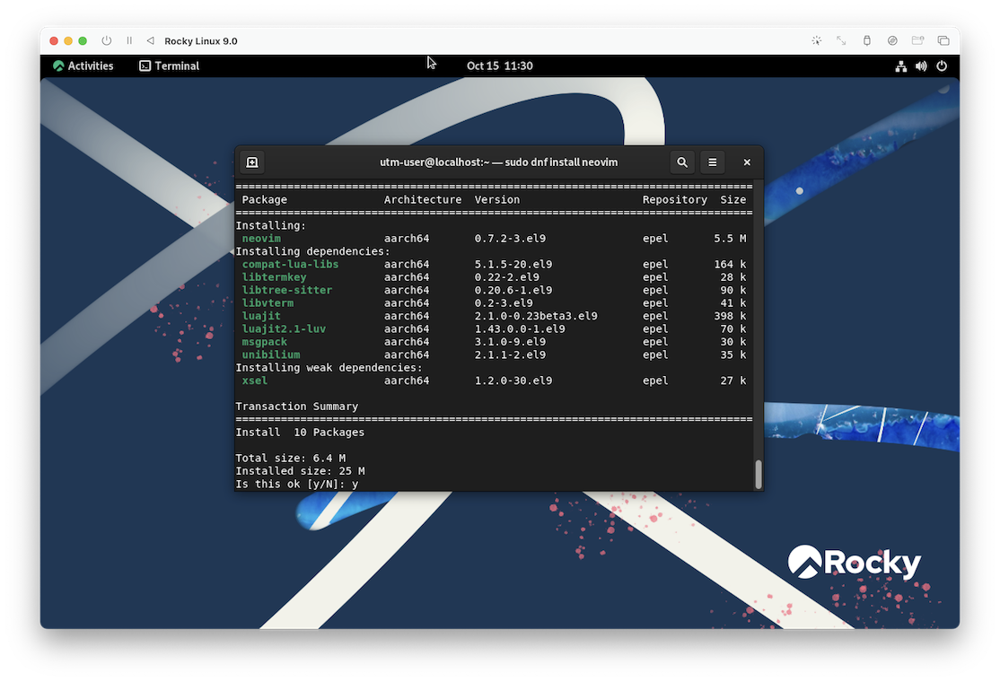
その後、Nov 1 時点で0.8.0-0.el9になってました❗
User Config
なんかもういつも通りですが、まずは設定ファイルを置くところから始めましょう。
A file containing initialization commands is generically called a "vimrc" or config file. It can be either Vimscript ("init.vim") or Lua ("init.lua"), but not both.
初期化コマンドを含むファイルは一般に "vimrc" または config ファイルと呼ばれます。 Vimscript ("init.vim")またはLua ("init.lua")のどちらかになりますが、両方は使えません。
なんということでしょう❗VimscriptまたはLuaのどちらかを選ばなければなりません😩
...なんつって。白々しかったですよね〜😉
このサイトでは、WezTermでも散々扱ってきたLuaを選択します。
(というか、わたしはVimScript扱えません。)
NeovimはVimscriptを扱えますが、後継のVim9 scriptはサポートしないことが表明されているようです。
もしこれを扱いたい場合は Vim を使う必要があります。
詳しく調べたわけではありませんが、これから始めるならNeovim + LuaかVim + Vim9 scriptの2択じゃないでしょうか？
わたし自身は Neovim → WezTerm という順番でLuaに触れてきましたが、難易度的にはNeovimの方が高いと思ってます。
うん、このまま登っていきましょう。
init.lua
前置きが少し長くなりました...。
冒頭のドキュメントでconfigファイルは以下の場所だよ😄と示されています。(macOSはUnixと同じ場所です。)
| OS | configファイル |
|---|---|
| Unix | ~/.config/nvim/init.vim (or init.lua) |
| Windows | ~/AppData/Local/nvim/init.vim (or init.lua) |
| $XDG_CONFIG_HOME | $XDG_CONFIG_HOME/nvim/init.vim (or init.lua) |
では作っていきましょう😄
Windowsの場合は~/AppData/Local/nvimに読み替えてください。
# 先にディレクトリを移動しておく
cd ~/.config/nvim
# nvimを使ってinit.luaを作成する(touchでもいいんですけどね。)
# 中身はまだ無くてOKです。
nvim init.lua
マサラは まっしろ はじまりのいろ
Lua Module
なんと、これに関しては既に日本語に訳されたドキュメントが存在します。
登っていきましょうとか言っておいてなんですが、まずは掘り下げちゃいます。どんまい😆
Luaモジュールは、runtimepath内のlua/フォルダにあります (ほとんどの場合、*nixでは~/.config/nvim/lua、Windowsでは~/AppData/Local/nvim/luaを意味します)。
このフォルダにあるファイルをLuaモジュールとしてrequire()できます。
runtimepath
一個ずつ見ていきますが、runtimepathはNeovimで以下のコマンドを使用することで確認できます。

いきなりちょっと複雑でしたね😅
頑張ってコマンドを打つと、出力の中に "~/.config/nvim"があるはずです。1
(上の例はunixなので"/home/utm-user/.config/nvim")
ここにluaディレクトリを作成することで、上に示されている「ほとんどの場合」に合致できます。
あと、runtimepath絡みでもう一つポイントがあります。
runtimepath内にある特定のフォルダからLuaファイルを自動的に読み込めます。 現在、次のフォルダがサポートされています。
- colors/
- compiler/
- ftplugin/
- ftdetect/
- indent/
- plugin/
- syntax/
逆に言うと、luaディレクトリは自動では読み込まないぞ❗ということですね。
luaディレクトリに置いたファイルは~/.config/nvim/init.luaからrequire()で読み込んでいきましょう。
require()
require()はWezTermでも使いましたね。
WezTermの時はwezterm.lua と同じディレクトリにあるファイルを読み込むことにしか使用していませんでしたが、
もうちょっと高機能です。
次のLuaコードはmyluamodule.luaをロードします。:
require('myluamodule')
.lua拡張子がないことに注意してください。
同様に、other_modules/anothermodule.lua のロードは次のように行います。:
require('other_modules.anothermodule')
-- or
require('other_modules/anothermodule')
パスの区切りはドット.またはスラッシュ/で示されます。
フォルダにinit.luaが含まれている場合、ファイル名を指定せずにロードできます。
最後の一文は、
require('example')
とした場合にexample/init.luaをロードできるよ❗ってことですね。これはNeovimに限ったものではなく、Luaの仕様みたいです。
全く関係ないところでやってみてもこの説明で通用するものになりました。

~/.config/nvimディレクトリが存在しないとruntimepathからもいなくなるようです。ディレクトリの存在を事前に確認してる?🤔

Options
じゃあ、いつも通りのところから始めていきます☺️
luaディレクトリにoptions.luaとでもしてファイルを作成しましょう。
で、init.luaからrequire()するんでしたね。
もうバッチリですね🤗
help
これ...、超重要なやつなんで...。
心して...! Neovimのコマンドから打ってください...!!
:h help
もしくは
:help help
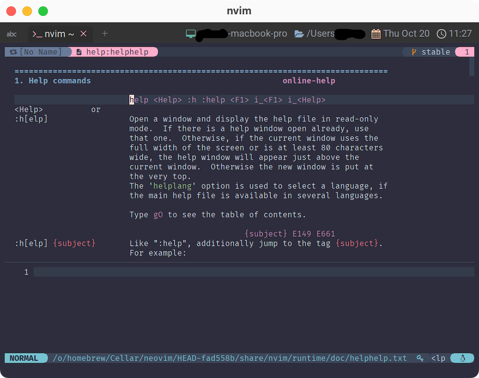
helpのヘルプが開きましたね🤣
色々書いてありますが、とりあえずはこれだけ覚えていればOK❗重要だぞ😉❤️
:h[elp] Open a window and display the help file in read-only mode.
ウィンドウを開き、ヘルプファイルを読み込み専用で表示する。
Type |gO| to see the table of contents.
目次を見るには、gO (←大文字のアルファベットO) とタイプする。
:h[elp] {subject} Like ":help", additionally jump to the tag {subject}.
":help" と同様だが、さらに {subject} というタグにジャンプする。
For example:
:help options
If there is no full match for the pattern, or there
are several matches, the "best" match will be used.
A sophisticated algorithm is used to decide which
match is better than another one.
パターンに完全一致するものがない場合、あるいは複数一致するものがある場合は、
高度なアルゴリズムによって「最も」一致すると思われるパターンが使用される。
:hでヘルプのトップページ、:h {subject}でヘルプを検索してヒットしたタグにジャンプ。ということですね。
今回は後者でした。helpタグに直接飛びましたよね。
閉じるときは:qとか:bdでいいんですが、頑張りすぎて ぐちゃぐちゃ になっちゃう時があるので、
併せて:helpc(or :helpclose)も覚えておくと安心です☺️
:helpc[lose] Close one help window, if there is one.
Vim will try to restore the window layout (including
cursor position) to the same layout it was before
opening the help window initially.
ヘルプウィンドウがある場合、それを閉じる。
Vim は、ウィンドウのレイアウト（カーソル位置も含む）を、
最初にヘルプウィンドウを開く前と同じレイアウトに戻そうとする。
ヘルプの使い方さえわかってしまえば、もうこっちのもんですね🤗
きみは いま❗
nvimちほう への
だいいっぽを ふみだした❗
なんだったら タウンマップで
かくにんして ごらん❗
nvim_set_option
あ❗ やせいの
`nvim_set_option`が とびだしてきた❗
なんか始まったぁ❗というのか、まだ続いてんのぉ❓というのかわかりませんが へっちゃらです😉
図鑑だとどうか分かりませんが、helpなら今までに捕まえたことのないモンスターでも既に登録されています。
なんだったらバトル中でも確認できます。わーい😆
nvim_set_option({name}, {value}) nvim_set_option()
Sets the global value of an option.
オプションのグローバル値を設定する。
Parameters:
• {name} Option name
• {value} New option value
パラメータ
• {name} オプション名
• {value} 新しいオプションの値
nvim_set_optionはグローバル値を設定できるタイプのモンスターみたいですね🤔
次のページから野生のオプションが飛び出してきそうな気配ですが、helpとnvim_set_optionがいれば "グローバルどうろ" も歩いて行けそうですね。
termguicolors
それでは前項でGETしたnvim_set_option()を使ってカスタマイズを進めていきましょう😸
掲題のお名前からある程度は推測できちゃうんですが、最初なのでまあ、のほほん☺️ と。
'termguicolors' 'tgc' 'notermguicolors' 'notgc'
'termguicolors' 'tgc' boolean (default off)
global
Enables 24-bit RGB color in the |TUI|.
|TUI|で24ビットRGBカラーを有効にする。
「24ビットRGBカラーを有効にするglobalなオプション、termguicolorsもしくはtgc1は、boolean値(デフォルトoff)だよ。」ってのがなんか伝わってきますね🤔
...わたしも全ての意味を理解しているわけではないのでこの辺で切り上げちゃうんですが、
「24ビットRGBカラーを使いたいからonにしちゃえー❗」っていうのが上の設定です。
ヘルプの1行目にあるのはコマンドですね。
頭にnoがついてるのとかはなんかすごい無効化されそうな趣ですが、これらは:setコマンドから使うことができます。
# 無効化
:set notgc
# 有効化
:set tgc
一時的に設定を変えたくなった時などに便利です。
タマムシ にじいろ ゆめの いろ2
"東京ガールズコレクション"❓ってなる、ウケる〜🤣 ...そうでもないかぁ😮
このページで7色使えてたら面白かったんですけど、1色足りませんでしたね...。
scrolloff
さて、次はこんなのが飛び出してきました❗もはやルーティンですね😌
'scrolloff' 'so'
'scrolloff' 'so' number (default 0)
global or local to window |global-local|
Minimal number of screen lines to keep above and below the cursor.
This will make some context visible around where you are working. If
you set it to a very large value (999) the cursor line will always be
in the middle of the window (except at the start or end of the file or
when long lines wrap).
カーソルの上下に表示する最小限のスクリーンライン数。
これにより、作業している場所の周辺にあるコンテキストを表示することができる。もし
非常に大きな値(999)を設定すると、カーソル行は常にウィンドウの中央に位置する。
(ファイルの先頭または末尾、あるいは長い行が折り返される場合を除く)。
デフォルト値0の場合は、画面の上下端まで行かないと行スクロールしませんが、
1以上を指定すると指定行数分の余裕を持って手前でスクロールします。
下から数えて5行目の位置から4行目に移動しようとすると...、
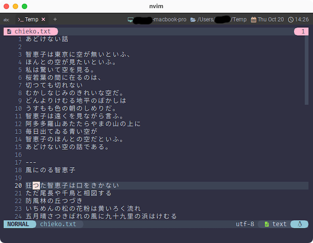
カーソル移動ではなく、本文が行スクロールする。
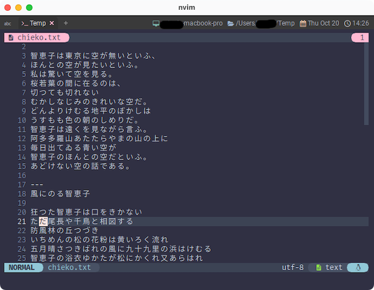
文字で説明するとイメージが難しいんですが、0の状態と比べて動かしてみれば、すぐに意味はわかると思います😸
ignorecase / smartcase
この2つは検索に関するオプションなのでまとめていっちゃいます😆
7. Ignoring case in a pattern /ignorecase
If the 'ignorecase' option is on, the case of normal letters is ignored.
'smartcase' can be set to ignore case when the pattern contains lowercase
letters only.
ignorecase' オプションがオンの場合、通常の文字の大文字小文字は無視される。
smartcase' を指定すると、パターンが小文字のみである場合に大文字小文字を無視する。
Examples:
pattern 'ignorecase' 'smartcase' matches
foo off - foo
foo on - foo Foo FOO
Foo on off foo Foo FOO
Foo on on Foo
\cfoo - - foo Foo FOO
foo\C - - foo
'smartcase' 'scs' 'nosmartcase' 'noscs'
'smartcase' 'scs' boolean (default off)
global
Override the 'ignorecase' option if the search pattern contains upper
case characters. Only used when the search pattern is typed and
'ignorecase' option is on.
検索パターンが大文字を含む場合、'ignorecase' オプションを無効にする。
検索パターンが入力され、'ignorecase' が on の時のみ使用される。
これは実際に動かしてみましょう😉 まずは以下の文章を入れてみて下さい。
「彼女がおれのことなんて気にも留めずに行っちゃうよ！」...っていう Ticket to Rideの一節です。1
それでは小文字だけのsheを検索してみます。検索には/で入れます。
/she
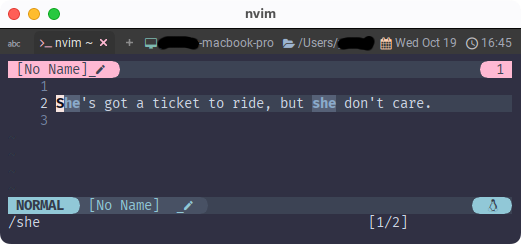
Sheとsheの2つに反応しましたね。
じゃあ、次は 「大文字を含む場合」のSheでやってみましょう。
/She
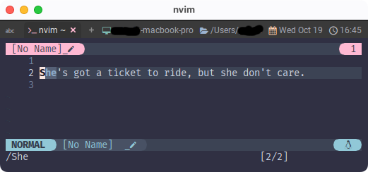
Sheだけに反応しましたね。
要は、「大文字が含まれていれば大小区別するけど、含まれてないなら大小無視します。」っていう設定をしたんです。
あ❗これはHELP! - The Beatles の収録曲ですね❗ なんかこの辺ヘルプばっかりじゃね⁉️ってなる、ウケる〜🤣 ...そうでもないかぁ😮
inccommand
検索の次は置換ですよね〜😆
'inccommand' 'icm'
'inccommand' 'icm' string (default "nosplit")
global
Possible values:
nosplit Shows the effects of a command incrementally in the
buffer.
split Like "nosplit", but also shows partial off-screen
results in a preview window.
受け取る値
nosplit コマンドの効果をバッファにインクリメンタルに表示する。
split "nosplit" に加えて、画面外の結果を部分的にプレビューウィンドウに表示する。
じゃあ、また動かしてみましょう。
これ Karen が歌ったら面白いんじゃない？😆 ってなるのはなんかもう必然の Richard ですので、
She👩をHe👨に変えます。1
置換操作は:%s/{検索値}/{置換値}とすると実行できます。
:%s/She/He
画面下にプレビューウィンドウが出るようになりました。
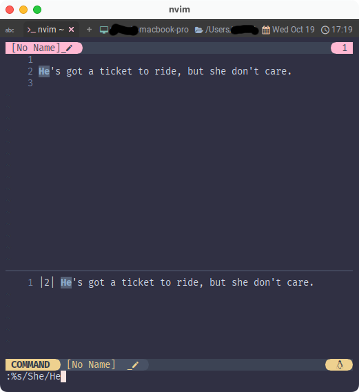
ちょっとこれだとあんまり威力を感じられないんですが、画面に収まってない部分もプレビューできるのが強みです。
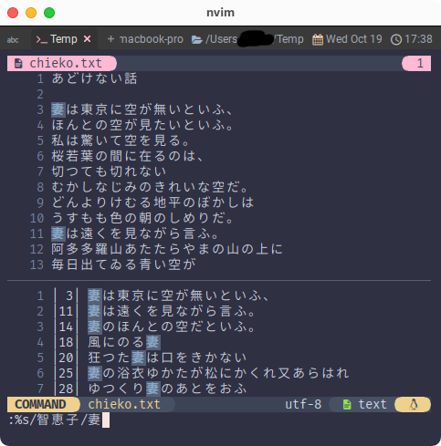
下のようになってたとして、(だいぶ強引ですが) 大文字を含まないsheでやった場合にあれれー❓ってなるの気付きます？
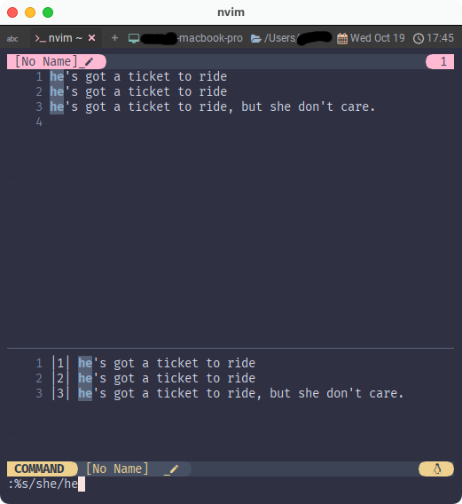
そうです。3行目にsheは2つあるのに、1つ取りこぼししちゃってます😱
実はこのやり方だと同じ行の中では最初にヒットしたところしか反応しません。
こういう場合は、
:%s/she/he/g
...と、gオプションを追加してあげると期待通りの結果が得られます。
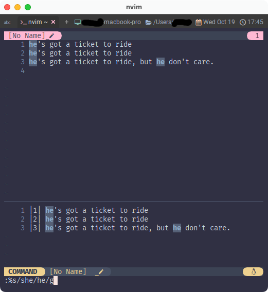
割とあるシチュエーションだと思うので、覚えておくと役に立ちます😉
The Carpenters の
デビュー曲はTicket to Rideのアレンジでした。これが1969年のお話。
Richard がviとかで歌詞置換してたらウケる〜🤣 とか思って見たらviですら初版が1976年...。
NeovimどころかVimどころか、viですら意外と新しい😲 ...そうでもないかぁ😮
ClipBoard
そうだそうだ。大事なものを忘れていました😅
Nvim has no direct connection to the system clipboard. Instead it depends on
a |provider| which transparently uses shell commands to communicate with the
system clipboard or any other clipboard "backend".
Nvim は、システムのクリップボードに直接接続することはできない。
その代わり、システムのクリップボードや他のクリップボードの「バックエンド」と
通信するためにシェルコマンドを透過的に使用するプロバイダに依存する。
To ALWAYS use the clipboard for ALL operations (instead of interacting with
the '+' and/or '*' registers explicitly):
クリップボードを常に使用する場合 ('+' や '*' を明示的に操作する代わりに以下のようにする):
set clipboard+=unnamedplus
See 'clipboard' for details and options.
詳細とオプションについては、「クリップボード」を参照。
これを設定しておくとクリップボードをシステムと共有できます☺️
要は、クリップボードを介してNeovimの文字列を他のアプリケーションに持って行ったり、来たりができるんですね❗便利😆
上のヘルプの中で、ほぼ答えは書いてくれてるんですが、詳細 (optionsの中にあるclipboard) も確認してみましょう。
今回、provider の clipboardと、options の clipboardを見たいのですが、
単純にclipboardとすると前者にしか飛べません。後者のように、コマンドを探す場合は'で囲うと一発で飛べます。
...確信は無いんですけどね😅
この先でもいくつか出てくるので、頭の片隅にでも置いといていただければ...。
'clipboard' 'cb' string (default "")
global
This option is a list of comma-separated names.
このオプションは、カンマで区切られた名前のリストである。
この先はレジスタの話が出てきて自信がない...😓
unnamed / unnamedplus
These names are recognized:
これらの名前は認識される。
clipboard-unnamed
unnamed
When included, Vim will use the clipboard register '*'
for all yank, delete, change and put operations which
would normally go to the unnamed register. When a
register is explicitly specified, it will always be
used regardless of whether "unnamed" is in 'clipboard'
or not. The clipboard register can always be
explicitly accessed using the "* notation. Also see
|clipboard|.
これを含むと、Vim は通常 unnamed レジスタに行くような yank, delete, change, put 操作に対して、
クリップボードレジスタ '*' を使用する。
レジスタが明示的に指定された場合、'clipboard' に unnamed が入っているかどうかに関わらず、
常にそのレジスタが使用される。
クリップボードレジスタは、常に「*」表記で明示的にアクセスすることができる。
clipboard-unnamedplus
unnamedplus
A variant of the "unnamed" flag which uses the
clipboard register '+' (|quoteplus|) instead of
register '*' for all yank, delete, change and put
operations which would normally go to the unnamed
register. When "unnamed" is also included to the
option, yank and delete operations (but not put)
will additionally copy the text into register
'*'. See |clipboard|.
unnamed" フラグの亜種で、通常 unnamed レジスタに行くはずの yank, delete, change, put 操作すべてに対して、
レジスタ '*' の代わりにクリップボードレジスタ '+' (|quoteplus|) を使用する。
unnamed" がオプションに含まれている場合、
yank と delete 操作 (put は不可) は、さらにテキストをレジスタ '+' にコピーする。
なんかもうヘルプまみれですが、ここで確認しておきたいのはclipboardのデフォルト値ですね。
これを見ると""となっているので、特に何も気にしないで、このように書いてしまって問題ないはずです😉
もしヘルプに従った書き方にしたい場合は、以下のようになると思います。
vim.opt.clipboard:append 'unnamedplus'
Append a value to string-style options. See |:set+=|
文字列スタイルのオプションに値を追加する。参照: |:set+=|
もしかしたらAPIを通して追加する方法があるのかもしれないんですが、ちょっとわたしが知らなくて...。
とりあえずこの書き方でも同じ動作が実現できるので、お好みで😆
全体のまとめに入っちゃうんですが、
こんな感じでオプションを一個一個確認していくと、デフォルトのままでいいなーって思うものがほとんどなので、 (デフォルト設定は基本書かない) わたしが使っているグローバルオプションなんてこんなもんです。☺️
次でローカルオプションというものが出てきますが、それもやっぱりわたしが書いているものだけなら大した数じゃないです。
またさらにその先でプラグインとか使い出すと、もうちょっとだけ増えるんですが、それはまたその時に🤗
nvim_win_set_option
あ❗ やせいの
`nvim_win_set_option`が とびだしてきた❗
また来ましたね、このパターン😆
nvim_win_set_option({window}, {name}, {value}) *nvim_win_set_option()*
Sets a window option value. Passing `nil` as value deletes the option
(only works if there's a global fallback)
window のオプション値を設定する。value として `nil` を渡すと、そのオプションが削除される。
(グローバルフォールバックがある場合のみ動作する)
Parameters:
• {window} Window handle, or 0 for current window
• {name} Option name
• {value} Option value
• {window} ウィンドウのハンドル、またはカレントウィンドウの場合は0
• {name} オプション名
• {value} 新しいオプションの値
nvim_win_set_optionはwindow optionの値を設定できるタイプのモンスターみたいですね🤔
本質的な説明ではありませんが、Window handleを0としておけばnvim_set_optionと同じ感覚で使えます。
(逆に、これ以上の説明はわたしのレベルでは出来ない、と言うのが正直なところです😓)
"windowすいどう" は波の穏やかな海ですが、nvim_win_set_optionさえいれば "かいパンやろう"🙈とかそんなの関係なく進むことができそうです。
...なんで "かいパンやろう" を避けるのかって❓いや、それは...🙊
number
まず飛び出してくるのはこれですね。
'number' 'nu' 'nonumber' 'nonu'
'number' 'nu' boolean (default off)
local to window
Print the line number in front of each line. When the 'n' option is
excluded from 'cpoptions' a wrapped line will not use the column of
line numbers.
Use the 'numberwidth' option to adjust the room for the line number.
When a long, wrapped line doesn't start with the first character, '-'
characters are put before the number.
各行の前に行番号を表示する。 cpoptions' で 'n' オプションが除外されている場合、折り返し行では行番号の列は使用されない。
numberwidth' オプションを使用して、行番号を表示するスペースを調整する。
長い折り返し行が最初の文字で始まらない場合、'-' 文字が番号の前に置かれる。
これもやっぱり色々書いてあるんですが、わたしがここでやりたいことは行番号の表示です。
人によってはrelativenumberも気に入るかもしれません。
'relativenumber' 'rnu' 'norelativenumber' 'nornu'
'relativenumber' 'rnu' boolean (default off)
local to window
Show the line number relative to the line with the cursor in front of
each line. Relative line numbers help you use the |count| you can
precede some vertical motion commands (e.g. j k + -) with, without
having to calculate it yourself.
各行の前にカーソルを置くと、その行からの相対行番号を表示する。
相対的な行番号は、いくつかの垂直移動コマンド (例: j k + -) の前に付けることができる |count| を、
自分で計算することなく使用するのに役立ちます。
numberとrelativenumberを組み合わせた場合の動作も説明されています。
The 'relativenumber' option changes the displayed number to be
relative to the cursor. Together with 'number' there are these
four combinations (cursor in line 3):
relativenumber' オプションは、表示される数字をカーソルからの相対位置に変更する。
'number' と共に、以下の 4 つの組み合わせがある (カーソルは 3 行目にある)。
'nonu' 'nu' 'nonu' 'nu'
'nornu' 'nornu' 'rnu' 'rnu'
|apple | 1 apple | 2 apple | 2 apple
|pear | 2 pear | 1 pear | 1 pear
|nobody | 3 nobody | 0 nobody |3 nobody
|there | 4 there | 1 there | 1 there
numberとrelativenumberを一緒に使うと、なんかビッグウェーブ🌊が巻き起こるので、一度は乗るっきゃないです😆
:setコマンドで気軽に乗れます。
-- number と relativenumber を一度で on にする
:set nu rnu

まあ、わたしにはクセが凄くて乗りこなせないんですけどね😉
-- relativenumber だけ切っちゃう...
:set nornu
で、numberwidthも少し気になるんですが...、わたしは入れずにそのままにしてます。
'numberwidth' 'nuw' number (default: 4)
local to window
Minimal number of columns to use for the line number. Only relevant
when the 'number' or 'relativenumber' option is set or printing lines
with a line number. Since one space is always between the number and
the text, there is one less character for the number itself.
行番号に使用する最小限の列数。
number' または 'relativenumber' オプションが設定されているとき、
あるいは行番号を持つ行を印刷するときにのみ関係する。
番号とテキストの間には常に空白が1つ入るので、番号自体の文字数は1つ少なくなる。
あと、"かいパ"🙊 ...じゃなくて、cpoptionsなんですが、こいつはなんか怖いので今のところは避けておきます。
cursorline
さて、続いて飛び出してきました、
'cursorline' 'cul' 'nocursorline' 'nocul'
'cursorline' 'cul' boolean (default off)
local to window
Highlight the text line of the cursor with CursorLine |hl-CursorLine|.
Useful to easily spot the cursor. Will make screen redrawing slower.
When Visual mode is active the highlighting isn't used to make it
easier to see the selected text.
CursorLine |hl-CursorLine| でカーソルのあるテキスト行を強調表示します。
カーソルを簡単に見つけるのに便利です。 ただし、画面の再描画が遅くなります。
ビジュアルモードがアクティブなときは、選択テキストを見やすくするためにハイライトは使用されません。
これは動かしてみれば一目瞭然ですね😉
before:
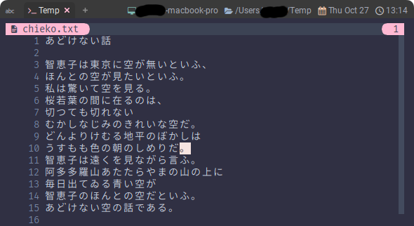
after:
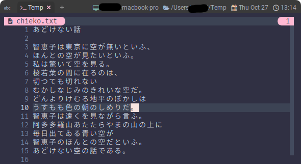
しっかりと"カーソルのあるテキスト行を強調表示"してますね❗
少し気になるのは、「画面の再描画が遅くなります」という注意書きがされていることでしょうか...。
わざわざ書かれているぐらいなので、想像以上に重い処理なのかもしれない...😱
ご自身の環境と相談の上で、使うかどうかを決めて頂ければ😺
signcolumn
この段階で出てこられても、ちょっと説明に困る部分もあるんですが...。
まあ、外観に影響する部分なので、先にやっちゃうことにします😉
'signcolumn' 'scl'
'signcolumn' 'scl' string (default "auto")
local to window
When and how to draw the signcolumn. Valid values are:
記号列をどのように描画するか。有効な値は以下の通り。
"auto" only when there is a sign to display
表示する sign がある場合のみ表示する
"auto:[1-9]" resize to accommodate multiple signs up to the
指定された数まで複数のサインを収容するためにリサイズする
"auto:[1-8]-[2-9]"
resize to accommodate multiple signs up to the
given maximum number (maximum 9) while keeping
at least the given minimum (maximum 8) fixed
space. The minimum number should always be less
than the maximum number.
与えられた最小値（最大8）以上の固定スペースを維持しながら、
与えられた最大数（最大9）までの複数のサインを収容するためにリサイズする。
最小数は常に最大数より小さくなければならない。
"no" never
常に表示しない
"yes" always
常に表示する
"yes:[1-9]" always, with fixed space for signs up to the given number (maximum 9)
常に、与えられた数（最大9）までの標識のための固定スペースを持つ
"number" display signs in the 'number' column. If the number
column is not present, then behaves like "auto".
"番号" の欄に column を表示する。
番号列が存在しない場合は、"auto" と同じように動作する。
大まかにいえば3通りがあって、
-
auto(デフォルト)にしておくか...、 -
yesかnoで決め打つか...、 -
何か独特の雰囲気を持つ
numberか...、
ですね。
autoは表示と非表示が動的に切り替わるので、編集中にぺこぱこすることがあります。
わたしは固定しちゃう方が好きです😆
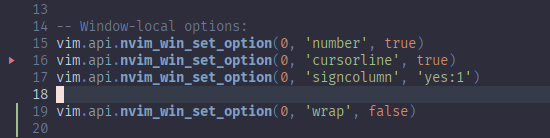
numberはこんな感じになります。
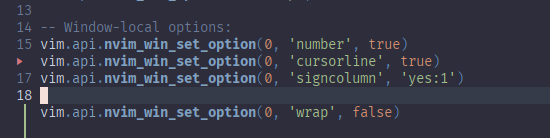
上のスクリーンショットでは、gitsigns.nvim1というプラグイン2を使用して、変更箇所をsigncolumnに表示しています。
(▶︎ とか ▎の部分がそれです。)
yesと比べて違いは明らかですね😆 行番号に優先してコラムを表示してます。
まあこれくらいなら、なんか見た目的に面白いなーと思うんですが、
Untracked fileとか開くと行番号が全部隠れちゃうので、やっぱクセつよですよね...。
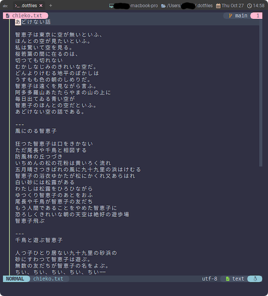
プラグインについてはこのサイトでも取り上げたいんですが、もうちょっとかかりそうです😓
wrap / colorcolumn
前回使われていたスクリーンショットの中に、こんなのが見切れていました。
これは今までとは違うパターンで、デフォルトで有効にされているものを無効化してます。
なんか "かいパ"🙊 ...あ、いえ、なんでもないです😅
'wrap' 'nowrap'
'wrap' boolean (default on)
local to window
This option changes how text is displayed. It doesn't change the text
in the buffer, see 'textwidth' for that.
このオプションは、テキストの表示方法を変更する。
バッファ内のテキストは変更されないので、それについては 'textwidth' を参照すること。
When on, lines longer than the width of the window will wrap and
displaying continues on the next line. When off lines will not wrap
and only part of long lines will be displayed. When the cursor is
moved to a part that is not shown, the screen will scroll
horizontally.
on の場合、ウィンドウの幅より長い行は折り返され、次の行に表示される。
off の場合、行は折り返されず、長い行の一部分のみが表示される。
表示されていない部分にカーソルを移動すると、画面が水平方向にスクロールする。
ぶっちゃけこれが必要になるのって、そもそもテキストが変なんじゃないかと思うので、わたしは無効化しちゃってます🙈
無効にする場合はsidescrollなどを変えると便利になるよ❗...と、
wrapのヘルプに書いてくれているので、参考にしてみると良いと思います😉
To make scrolling horizontally a bit more useful, try this:
:set sidescroll=5
:set listchars+=precedes:<,extends:>
See 'sidescroll', 'listchars' and |wrap-off|.
...わたしは今気づいたので、また今度試してみます。
むしろ、変なファイルを作らないためのマナーに働きかけるものとして、colorcolumnを活用する方がいいと思います。
*'colorcolumn'* *'cc'*
'colorcolumn' 'cc' string (default "")
local to window
'colorcolumn' is a comma-separated list of screen columns that are highlighted with
ColorColumn |hl-ColorColumn|. Useful to align text. Will make screen redrawing slower.
'colorcolumn' はColorColumn |hl-ColorColumn| でハイライトされる画面列のカンマ区切りリストです。
テキストを整列させるのに便利。ただ、画面の再描画が遅くなる。
The screen column can be an absolute number, or a number preceded with '+' or '-',
which is added to or subtracted from 'textwidth'.
スクリーンカラムは絶対値か、'+' または '-' で始まる数値で、'textwidth' に加算または減算される。
使い方としてはこんなんです。
vim.api.nvim_win_set_option(0, 'colorcolumn', '100')
こんな感じで100文字目の列を教えてくれます。
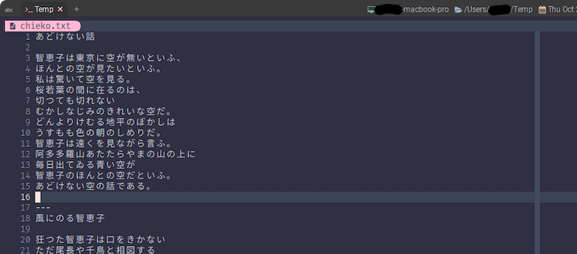
ただ、これはなんか、再描画遅くなるとも書いてあるし😅 そんなに出しとく必要ある〜❓とか思っちゃうので、
...っていう運用にしていくのもいいんじゃないかな〜、なんて思ってるんですが、どうでしょう❓
window optionの設定は、ひとまずここまでです🤗
わたしもまだ色々試している最中のNeovimトレーナーなので、
気まぐれに増やしたり減ったりしていくかもしれませんが、ゆる〜くお付き合いください☺️
ただ、ローカルオプションとしてはまだbufferというものがおりまして...🐃🐃🐃
ぶっちゃけ自信が無いところなんですが...、まあ、その辺りも含めて、また次回😉
いけ❗ いけるかぎり どこまでも
せかいを ひろげるのは きみじしんさ
nvim_buf_set_option
bufferリ ゾーンに ようこそ❗
この ひろい bufferリで
いろんな モンスター とりほうだいの
ゲームが たった ５００円❗
さっそく やりますか❓
...なんだかいつもと違うパターンで始まりましたが、まあ...「はい😮」
それでは・・・❗
５００円 いただきまーす❗
ここでは bufferリ せんようの
APIを つかいます❗
・・・ これです❗
nvim_buf_set_option({buffer}, {name}, {value}) *nvim_buf_set_option()*
Sets a buffer option value. Passing `nil` as value deletes the option
(only works if there's a global fallback)
buffer のオプション値を設定する。value として `nil` を渡すと、そのオプションが削除される。
(グローバルフォールバックがある場合のみ動作する)
Parameters:
• {buffer} Buffer handle, or 0 for current buffer
バッファハンドル、またはカレントバッファの場合は0。
• {name} Option name
オプション名
• {value} Option value
新しいオプションの値
buffer専用ではありますが、やはりこのAPIも、
これまでに捕まえてきたset_option系と同じ、頼れるモンスターです☺️
のこり じかんが なくなるか❗
APIが なくなったら
メガホンで しらせます❗
tabstop / shiftwidth / expandtab
さすがは "bufferリゾーン" ですね😆 いきなり "みつごどりモンスター" が飛び出してきました❗
tabstop
'tabstop' 'ts'
'tabstop' 'ts' number (default 8)
local to buffer
Number of spaces that a <Tab> in the file counts for. Also see
the |:retab| command, and the 'softtabstop' option.
ファイル中の<Tab>がカウントするスペースの数。
|:retab| コマンドと 'softtabstop' オプションも参照のこと。
Note: Setting 'tabstop' to any other value than 8 can make your file
appear wrong in many places, e.g., when printing it.
The value must be more than 0 and less than 10000.
注意: 'tabstop' を 8 以外の値に設定すると、ファイルを印刷するときなど、多くの場所で間違って表示されることがある。
値は0以上10000以下でなければならない。
There are four main ways to use tabs in Vim:
Vimでタブを使うには、主に4つの方法がある。
tabstopは俗に言う "タブ幅" です。デフォルトのまま8ってなってると、古いファイルのような印象を持っちゃうんですが、実際のところはどうなのかな...🤔
単純にタブ幅だけを設定して終わりなら話は簡単なのですが、Neovimの場合、この先に出てくるオプションとやや複雑に絡み合っています😓
そのためなのか、ヘルプ (上の抜粋に含まない部分) ではこれらを適切に設定する4つの方法が示されています。
わたしが採用しているのは、オーソドックスな2.です☺️
2. Set 'tabstop' and 'shiftwidth' to whatever you prefer and use
'expandtab'. This way you will always insert spaces. The
formatting will never be messed up when 'tabstop' is changed.
'tabstop' と 'shiftwidth' を好きなように設定し、'expandtab'を使用する。
これで、常にスペースを挿入することができる。'tabstop'を変更しても、書式が乱れることはない。
「expandtabを使用すれば、tabstopとshiftwidthは好きにしちゃっていいよー。」...と読めますね。
一つずつ確認していきましょう😉
shiftwidth
'shiftwidth' 'sw' number (default 8)
local to buffer
Number of spaces to use for each step of (auto)indent. Used for
|'cindent'|, |>>|, |<<|, etc.
When zero the 'ts' value will be used. Use the |shiftwidth()|
function to get the effective shiftwidth value.
オートインデントの各ステップに使用するスペースの数。 |cindent’|、 |>>、 |<< などに使用される。
ゼロの場合、'ts'の値が使用されます。 有効な shiftwidth の値を得るには |shiftwidth()| 関数を使用する。
shiftwidthを "zero" にすれば、tabstopと同じ値を使ってくれるそうです。
タブ幅を決める
この2つを別の値に設定して活用するシチュエーション、ちょっとわたしでは想像が及ばないので、もう0にしちゃいます😅
tabstopの方は、"好きなように設定し"というお言葉に甘えて、お好みの数値を入れましょう😆
vim.api.nvim_buf_set_option(0, 'tabstop', 2)
vim.api.nvim_buf_set_option(0, 'shiftwidth', 0)
expandtab
その上で、"expandtabを使用する"んでしたね。
'expandtab' 'et' 'noexpandtab' 'noet'
'expandtab' 'et' boolean (default off)
local to buffer
In Insert mode: Use the appropriate number of spaces to insert a
<Tab>. Spaces are used in indents with the '>' and '<' commands and
when 'autoindent' is on. To insert a real tab when 'expandtab' is
on, use CTRL-V<Tab>. See also |:retab| and |ins-expandtab|.
挿入モードの場合: <Tab>を挿入する際に、適切な数のスペースを使用します。
スペースは '>' と '<' コマンドによるインデントと 'autoindent' がオンのときに使用されます。
expandtab' がオンの時に本当のタブを挿入するには、CTRL-V<Tab> を使用する。
|:retab| と |ins-expandtab| も参照のこと。
このオプションが、"常にスペースを挿入することができる" ...の、部分を担っているんですね☺️
autoindent
ちなみに、expandtabのヘルプの中に出てきたautoindentを少し見てみると...、
'autoindent' 'ai' 'noautoindent' 'noai'
'autoindent' 'ai' boolean (default on)
local to buffer
Copy indent from current line when starting a new line (typing <CR>
in Insert mode or when using the "o" or "O" command).
改行時に現在行のインデントをコピーする
（挿入モード、<CR>を入力したとき、または "o" や "O" コマンドを使用したとき）。
これはデフォルトonなので特に触らなくても平気でしょう。
よーし、これで全ての設定が終わったぞ❗やったね❗❗
フィナーレ...❓
...って思うじゃないですか😮
実はこれだけだと、起動直後に開いたバッファでしか設定したオプションが有効になりません...。
どうしよー😭ってなるんですけど、泣かなくて大丈夫。解決策はちゃんとあるから🤗
アナウンス『ピンポーン❗
じかんが きました❗
アナウンス『bufferリ ゲーム
おわり でーす❗
10. Options章は...❗ なんと...❗
これで終わりです😮
ビックリするぐらい中途半端なので、すごく悩むところではあるんですが...、
でもOptionsというカテゴリでやると不自然になっちゃうんで、やっぱり思い切って章を跨いじゃいます😆
次回、buffer解決編に続く。続くったら続く...🐃🐃🐃
Automatic commands
さて、新章開幕です😉
10.3.1節で残った問題を解決するべく、向かうのは...。
You can specify commands to be executed automatically when reading or writing a file, when entering or leaving a buffer or window, and when exiting Vim.
ファイルの読み書き、バッファやウィンドウへの入出時、 Vim の終了時に自動的に実行されるコマンドを指定することができる。
WARNING: Using autocommands is very powerful, and may lead to unexpected side effects.
警告：オートコマンドは非常に強力であり、使用すれば予期せぬ副作用をもたらす可能性がある。
やだ...、急に怖い😱
でも、このvery powerfulなautocmdと戦って勝たなければ、"ヴィムバッジ" は手に入りません❗
一人じゃ心細いところですが...大丈夫❗だってあなたは一人じゃない🤗
おれは トレーナーじゃないが
アドバイスは できるぜ❗
しんじろよ❗
しんじれば
チャンピオンも ゆめ じゃない❗
nvim_create_autocmd
いつだっておじさんは熱くアドバイスしてくれます☺️
nvim_create_autocmd({event}, {*opts}) nvim_create_autocmd()
Create an |autocommand|
The API allows for two (mutually exclusive) types of actions to be
executed when the autocommand triggers: a callback function (Lua or
Vimscript), or a command (like regular autocommands).
このAPIでは、オートコマンドのトリガー時に実行されるアクションとして、
コールバック関数（LuaまたはVimscript）、またはコマンド（通常のオートコマンドと同様）の
2種類（相互に排他的）を指定することができる。
-- Example using callback:
local myluafun = function() print("This buffer enters") end
vim.api.nvim_create_autocmd({"BufEnter", "BufWinEnter"}, {
pattern = {"*.c", "*.h"},
callback = myluafun,
})
ヘルプではもっと色々なサンプル付きで説明されていますが、今回はここで切り上げます😅
autocmd
現時点でautocmdがどのように登録されているのかは、以下のコマンドを実行してみると確認できます。
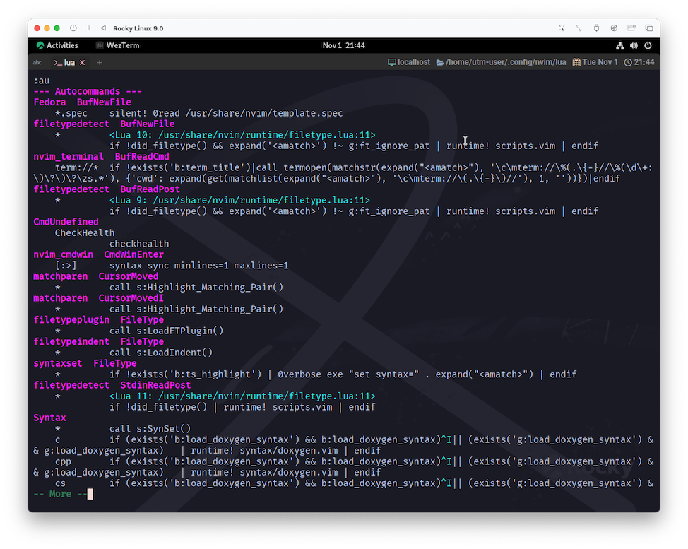
こんな感じに出てきたでしょうか。
ここに、自分で作ったautocmdを追加して「全てのバッファに対してtab関連の設定をするぞ❗」というのが
この節の趣旨であり、これこそが10.3.1節の問題を解決する方法です。
準備はよろしいでしょうか？
...OK❓
OKね...❗
それでは、例によって一つずつ確認していきます。
event
まずはeventなんですが、autocmd-eventsがこれでしょう🤔
5. Events autocmd-events E215 E216
You can specify a comma-separated list of event names. No white space can be
used in this list. The command applies to all the events in the list.
イベント名のリストをカンマ区切りで指定することができる。
このリストには空白を使用できない。コマンドは、リスト内のすべてのイベントに適用される。
で、上の例で使用されていたBufEnterとBufWinEnterだけ抜粋すると以下です。
BufEnter After entering a buffer. Useful for setting
options for a file type. Also executed when
starting to edit a buffer.
バッファに入った後。
ファイルタイプに応じたオプションを設定するのに便利。
また、バッファの編集を開始するときにも実行される。
BufWinEnter After a buffer is displayed in a window. This
may be when the buffer is loaded (after
processing modelines) or when a hidden buffer
is displayed (and is no longer hidden).
バッファがウィンドウに表示された後。
これは、バッファが読み込まれたとき (モデリング処理後) か、
非表示のバッファが表示されたとき(そして非表示でなくなったとき) かもしれない。
Not triggered for |:split| without arguments,
since the buffer does not change, or :split
with a file already open in a window.
Triggered for ":split" with the name of the
current buffer, since it reloads that buffer.
引数なしの |:split| や、
すでにウィンドウで開いているファイルとの :split では、バッファは変更されないためトリガーされない。
現在のバッファの名前を指定した ":split" では、バッファを再読み込みするためトリガーが発生する。
pattern
次はpatternです。これはfile-patternとして説明されています😌
The pattern is interpreted like mostly used in file names:
このパターンは、ファイル名によく使われるものと同じように解釈される。
* matches any sequence of characters; Unusual: includes path separators
? matches any single character
\? matches a '?'
. matches a '.'
~ matches a '~'
, separates patterns
\, matches a ','
{ } like \( \) in a |pattern|
, inside { }: like \| in a |pattern|
\} literal }
\{ literal {
\\\{n,m\} like \{n,m} in a |pattern|
\ special meaning like in a |pattern|
[ch] matches 'c' or 'h'
[^ch] match any character but 'c' and 'h'
callback
最後にcallbackですが、これはnvim_create_autocmdの中に記述が見つかります。
Lua function which is called when this autocommand is triggered. Cannot be used with {command}.
このオートコマンドが起動した際に呼び出されるLua関数です。{コマンド}とは併用できない。
実践
これらを踏まえて、改めて今回やりたいことを明確にすると、
event: バッファに入った際にpattern: 全てのファイル(パターン)に対してcallback:nvim_buf_set_optionを通してtab関連の設定をする
...に、なります。
eventについては、ヘルプ内で例示を行ってくれているので、そのまま採用します。(助かったぁ😆)
あとはもう、patternは簡単だし、callbackは既に書いたコードを持ってくれば良いだけですね😉
vim.api.nvim_create_autocmd({ 'BufEnter', 'BufWinEnter' }, {
pattern = '*',
callback = function()
-- 10.3.1 節で書いたコードをここに移動する
vim.api.nvim_buf_set_option(0, 'tabstop', 2)
vim.api.nvim_buf_set_option(0, 'shiftwidth', 0)
vim.api.nvim_buf_set_option(0, 'expandtab', true)
end,
})
それでは、nvimを再起動して、もう一度:auを実行してみましょう...。
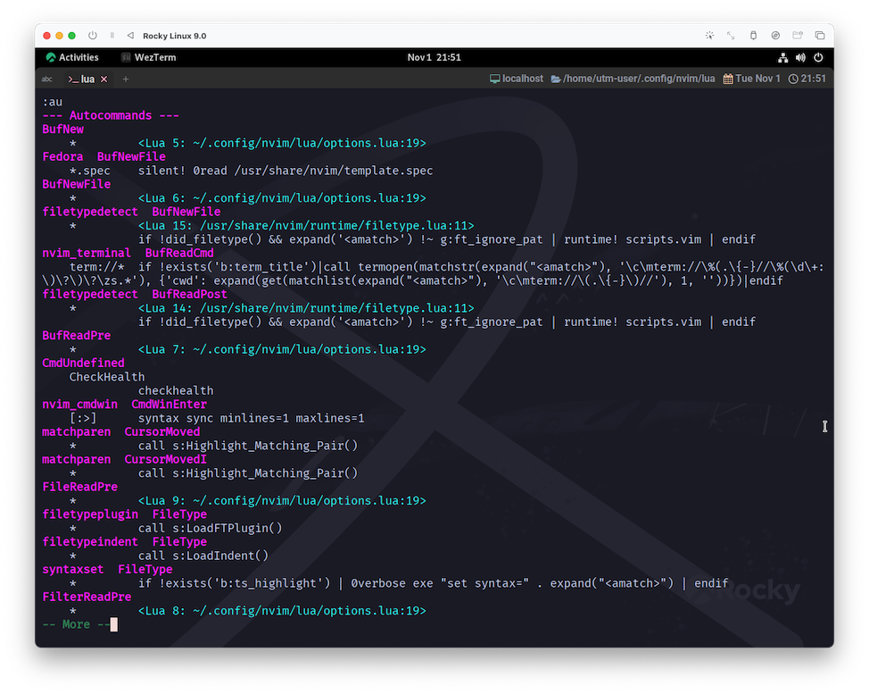
options.luaに書いたイベントが登録されていることが確認できましたね❗
編集画面に戻って適当にタブ入力をしてみてください。タブ幅の設定は反映されていますか❓
...されてますよね⁉️
ここまで来れば、とりあえずは期待する動作が得られているはずです😆
...、あ、えっと、"とりあえず" と言っているのには理由があって...。
でも、なんだか長くなってきたので、もう一回だけ続く...❗🙀
(疲れたらちゃんと休憩とってね☕)
nvim_create_augroup
うん。まず何よりもはっきりさせておきたいのは、auというのはautocmdの先頭2文字からきているようですね。
いや、なんか...、どうしても三太郎CMを思い浮かべてしまうので...🍑
...え❓ わたしだけ😧⁉️ 絶対嘘だ❗
nvim_create_augroup({name}, {*opts}) *nvim_create_augroup()*
Create or get an autocommand group |autocmd-groups|.
オートコマンドグループを作成または取得する。
Parameters:
• {name} String: The name of the group
グループの名前
• {opts} Dictionary Parameters
• clear (bool) optional: defaults to true. Clear existing
commands if the group already exists |autocmd-groups|.
デフォルトはtrue。グループが既に存在する場合、そのコマンドをクリアする。
Return:
Integer id of the created group.
作成されたグループの整数値 ID
See also:
|autocmd-groups|
See alsoって言われてるんで見ておきましょう😺
Autocommands can be put together in a group.
This is useful for removing or executing a group of autocommands.
オートコマンドは、グループとしてまとめることができる。
これは、オートコマンドのグループを削除したり実行したりするのに便利。
augroup
オートコマンドは以下で確認できます。まずは現状を確認します😌
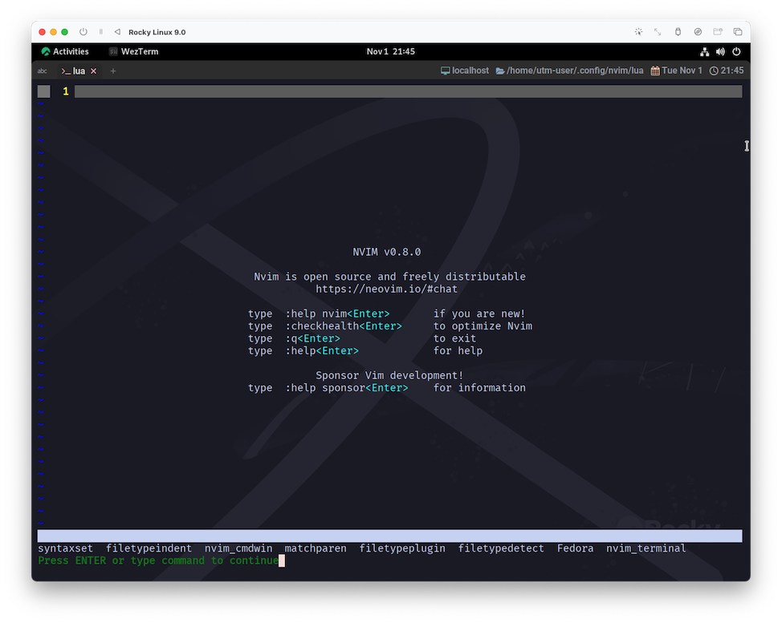
こんな感じですね😌
グループID
それでは話を進めるんですが、さっきのヘルプ中に、コードが例示されていましたね。
To get an existing group id, do:
既存のグループ ID を取得するには、次のようにする。
local id = vim.api.nvim_create_augroup("MyGroup", {
clear = false
})
"既存の"って言われると、「なんで😮❓」ってなるんですけど、
"オートコマンドグループを作成または取得する。"という最初の文言を信じることにしましょう。create_augroupなんだし❗
パラメータはnameには自分で決めたグループ名を、optsは...。更に話が長くなっちゃうんで空っぽ(デフォルト)にしときましょう。
optsはclearオプションを含んでいますが、
「なんでわざわざaugroup作らなきゃダメなの❓」っていう疑問と密接な関係がありそうです。
なんとな〜く察するに、「二重登録を防ぐためにある程度まとめて制御できた方がいいでしょ❓」的なことらしいんですが...、 わたしはいまひとつわかってません❗
ちなみにclearのデフォルト値はtrueなので安全は担保されてます。(意味を理解していれば、なんでしょうけどね😅)
ってことで、こんな感じのコードになるのかな。
グループの命名規則がわかりませんが、とりあえず雰囲気で...🤫
local id = vim.api.nvim_create_augroup("buffer_set_options", {})
これをnvim_create_autocmdに組み込むので、もう一回ヘルプを確認します。
• {opts} Dictionary of autocommand options:
• group (string|integer) optional: the autocommand group name or id to match against.
マッチするオートコマンドグループ名または ID。
nvim_create_augroupが返してくれるIDをそのまま渡せば良さそうですね。
実践
じゃあ、こんな感じでどうかな😆
-- local to buffer options:
vim.api.nvim_create_autocmd({ 'BufEnter', 'BufWinEnter' }, {
pattern = '*',
-- groupを追加する
group = vim.api.nvim_create_augroup('buffer_set_options', {}),
callback = function()
vim.api.nvim_buf_set_option(0, 'expandtab', true)
vim.api.nvim_buf_set_option(0, 'tabstop', 2)
vim.api.nvim_buf_set_option(0, 'shiftwidth', 0)
end,
})
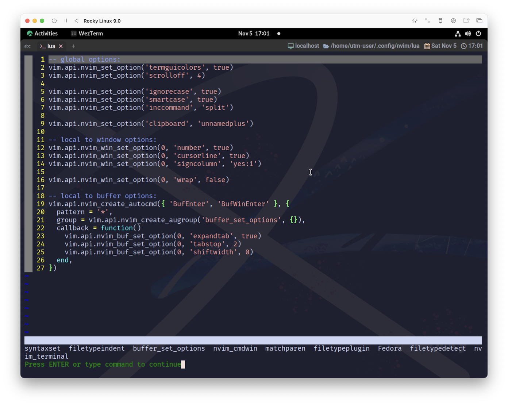
buffer_set_optionsの姿を確認できましたね❗これでもう完璧です😆
実はわたし、autocmdとか今まで全く触ってきてなくて、ず〜っと
-- なぜかうまく行く呪文 (2つ目以降のbufferもへーき)
vim.opt.tabstop = 2
とかして誤魔化してたんです。
でも、この辺りのページを作るにあたって考え直して、ようやく見栄えのするコードに辿り着けたので、なんかホッとしてます☺️
(...公開後に思いっきり書き直してますけどね😅 ここほんと怖い...。)
おまえが ｎｖｉｍ チャンピオン
をめざす❗ といっても
だれも わらわない❗ おうえんするぜ
Key Binding
この章ではキーバインドに触れていきます。
基本的には、やり方というか、テンプレートというか、そういうことだけ書いているつもりです😉
ある程度は実用性のある例を提示しようとすると、どうしても自分で使ってる設定が出てきちゃうんですが、 中身はそんなに気にしないでもらえればいいかなーと思ってます。
こんなの、ほんと個人の感覚に依るんで❗
ってことで、まずはやっぱりいつも通りですが、
luaディレクトリにkeybinds.luaとかなんとかでファイルを作成しておきましょう。
で、もちろんinit.luaから読み込むように以下を追記します。
変わり映えのしないルーティンですが、これが基本なので...。
まあ、のんびりいこーよ☺️
keymap.set()
set({mode}, {lhs}, {rhs}, {opts}) vim.keymap.set()
Add a new |mapping|. Examples:
新しい|mapping|を追加します。
Parameters:
• {mode} string|table Same mode short names as |nvim_set_keymap()|. Can
also be list of modes to create mapping on multiple modes.
|nvim_set_keymap()| と同じモードのショートネーム。
複数のモードに対してマッピングを作成するために、モードのリストを指定することもできる。
• {lhs} (string) Left-hand side |{lhs}| of the mapping.
マッピングの左辺|{lhs}|。
• {rhs} string|function Right-hand side |{rhs}| of the mapping. Can
also be a Lua function.
マッピングの右辺|{rhs}|。Luaの関数でも可。
• {opts} (table|nil) A table of |:map-arguments|.
• Accepts options accepted by the {opts} parameter in
|nvim_set_keymap()|, with the following notable differences:
• replace_keycodes: Defaults to `true` if "expr" is `true`.
• noremap: Always overridden with the inverse of "remap" (see below).
• In addition to those options, the table accepts the
following keys:
• buffer: (number or boolean) Add a mapping to the given
buffer. When `0` or `true`, use the current buffer.
• remap: (boolean) Make the mapping recursive. This is the
inverse of the "noremap" option from |nvim_set_keymap()|.
Defaults to `false`.
• |nvim_set_keymap()| の {opts} パラメータで受け付けられるオプションを受け付けるが、以下の顕著な違いがある。
• replace_keycodes: replace_keycodes: "expr" が `true` の場合、デフォルトは `true` 。
• noremap: noremap: "remap "の逆で常にオーバーライドされる(下記参照)。
• これらのオプションに加え、テーブルでは以下のキーを受け付ける。
• buffer: (number or boolean) 与えられたバッファにマッピングを追加する。
'0` または `true` の場合、現在のバッファを使用する。
• remap: (boolean) マッピングを再帰的に行う。これは |nvim_set_keymap()| の "noremap" オプションの逆バージョンである。
デフォルトは `false` 。
See also:
|nvim_set_keymap()|
{mode}のshort namesはこっち。
Parameters:
• {mode} Mode short-name (map command prefix: "n", "i", "v", "x", …) or
"!" for |:map!|, or empty string for |:map|.
Neovim Discourseの会話を盗み見た🤫感じだと、
vim.keymap.set()はvim.api.nvim_set_keymap()のSyntactic sugar1だと思われます。
ここまでひたすらvim.apiを使用してきたので、vim.api.nvim_set_keymap()を使用する方が統一感は出そうなんですが、記述が難しくなってしまうのは避けたい...。
...と、言うわけでvim.keymap.set()を使って行くことにします😉
Customize
実際に動かしてみましょう☺️
この先に出てくる、<Up>とか<C-…>だったりの表記が、どのキーを指しているのか❓などの一覧はkey-notationとして説明されています。
key-notation key-codes keycodes
These names for keys are used in the documentation.
They can also be used with the ":map" command.
これらのキーの名前は、ドキュメントで使用されています。
これらは ":map" コマンドで使用することもできます。
割り当て
これを記述してから再起動すると、方向キーの上下でスクロールするようになっているはずです。 (適当に2行以上入力してから試してください。)
上のコードが何をしているかと言うと、
ノーマルモードの時に, <上>キーが入力されたら, <Ctrl+y>キーの操作として受け付けるぞぉ❗
ノーマルモードの時に, <下>キーが入力されたら, <Ctrl+e>キーの操作として受け付けるぞぉ❗
ってことですね。
「キー操作に機能を割り当てる」と言うよりは、「キー操作にリンク先のキーを割り当てる 」というニュアンスかもしれません。
ここでは一度、実際に動くことを確認してもらいたかったのでkeybinds.luaのサンプルとして提示しましたが、
「こんな感じね〜」を掴めたら削除してもらって構いません。
この後は雰囲気だけ味わってもらえればいいかな〜、ぐらいで流します。軽〜く眺めてください😌
入れ替え
「相互に操作を入れ替える」みたいなパターンも、たったこれだけ😸
vim.keymap.set('n', ';', ':')
vim.keymap.set('n', ':', ';')
:は説明が長くなるので省略してしまうんですが、;でコマンドモードに入れるようになります。
無効化
無効化するパターンもあります。
vim.keymap.set('n', 'ZZ', '<NOP>')
vim.keymap.set('n', 'ZQ', '<NOP>')
<NOP>についてはヘルプに記載されていましたね。
ZZは保存してウィンドウを閉じる、ZQは保存しないで終了、...というのがデフォルトの動作ですが、これをそれぞれ無効化しています。
いや、なんか...、ノーマルモードから終了なんて、急すぎて怖くないですか...😱
モード
ここまでは全てノーマルモードでの例でしたが、もちろん他のモードでのカスタマイズもできます。
vim.keymap.set('i', 'jj', '<Esc>')
これを入れると、jjと連打するだけでインサートモードから抜けられるようになります。
...自分は使っておいてアレですが、使わないで済むならそれに越したことはないと思ってる設定です。
わたし自身はデフォルトで割り当てられている<Ctrl>[への脱却を試みてるんですが、だいぶ苦労してます...😅
{mode}(第一パラメータ)をもう少し詳しく見ると、こんな感じです。
map-table
Mode | Norm | Ins | Cmd | Vis | Sel | Opr | Term | Lang |
Command +------+-----+-----+-----+-----+-----+------+------+
[nore]map | yes | - | - | yes | yes | yes | - | - |
n[nore]map | yes | - | - | - | - | - | - | - |
[nore]map! | - | yes | yes | - | - | - | - | - |
i[nore]map | - | yes | - | - | - | - | - | - |
c[nore]map | - | - | yes | - | - | - | - | - |
v[nore]map | - | - | - | yes | yes | - | - | - |
x[nore]map | - | - | - | yes | - | - | - | - |
s[nore]map | - | - | - | - | yes | - | - | - |
o[nore]map | - | - | - | - | - | yes | - | - |
t[nore]map | - | - | - | - | - | - | yes | - |
l[nore]map | - | yes | yes | - | - | - | - | yes |
Vimscript準拠の表記になっていますが、先頭文字がそれぞれvim.keymap.setの{mode}に対応しています。
冒頭の例で言うと、'i'はインサートモードを指しています。
また、複数のモードに対して適用するのであれば以下のようになります。
vim.keymap.set({ 'n', 'v' }, 'p', 'p`]')
{ 'n', 'v' }はノーマルモードとビジュアルモードに適用する、というものになっています。
まとめ
改めて:mapで確認してみると、こんな感じで設定した内容が反映されていることが確認できます。
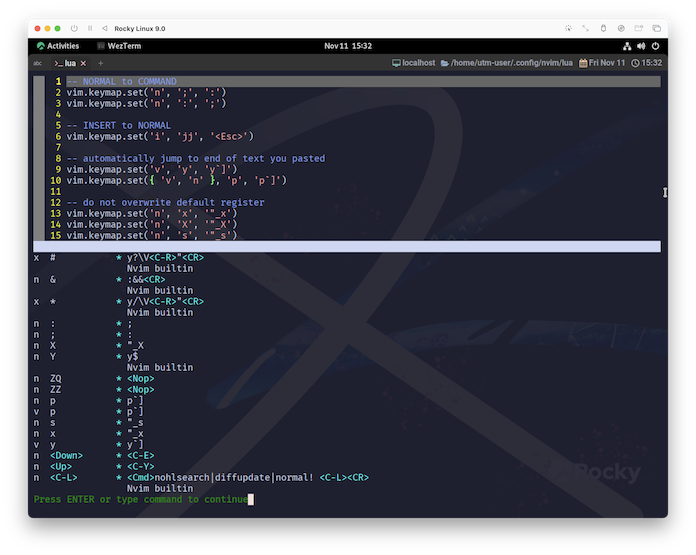
キーカスタマイズに関しては、Web上で色々な人が実用的なアイデアを公開しているので、色々試してみると良いです☺️
上のスクリーンショットにも入っているんですが、これとかは結構便利です。
vim.keymap.set('n', 'x', '"_x')
vim.keymap.set('n', 'X', '"_X')
vim.keymap.set('n', 's', '"_s')
これらは「1文字消して〜」の操作ですが、こうすると消した文字をレジスタに入れず、純粋に文字を消すだけの動作になります。
...って、ちょっと紹介したい欲が出てしまった🙀
念のために明示しておくんですが、このページに挙げた例もWebなどでわたしが見たアイデアをマネしてます。
実際に誰をマネしているのかがもう分からなくなっているので、ちゃんと参照元を示せない点は、ごめんなさい🥹
「これはわたしが発案してます😆」みたいに見えちゃうのは絶対に望んでないです。
ほんとしつこいようなんですけど、キーマップのカスタマイズは個人の感覚に依るので、根拠らしい根拠も出てこないですよね😅
この章では雰囲気だけ掴めれば、充分です😉
ただ、もう少し進むと「もう嫌❗🙀」ってなるぐらい実用的なキーカスタマイズに触れて行くことになります。
KEYMAP WILL RETURN
キーマップは帰ってくる
Syntactic sugarについては https://ja.wikipedia.org/wiki/糖衣構文 に丸投げします😃
Leader Key
前章でキーマップをやったので、この章ではLeaderキーを設定しておきましょう。
nvim_set_var
突然ですが、ここでニューヒーローをお迎えします❗その名もnvim_set_var❗😆
nvim_set_var({name}, {value}) nvim_set_var()
Sets a global (g:) variable.
グローバル(g:)変数を設定する。
Parameters:
• {name} Variable name
• {value} Variable value
すごくシンプル❗かぁっくいー❤️
章のタイトル飾れるだけの力があるのに、なんか無理やりの登場となってしまいました😅
...ただ、この後も出番はかなり限られてくると思われます。
能力の高さゆえ、守備範囲が広大すぎて地球だけに居られない Captain Marvel1 みたいですね❗
これは10章に入れるかどうか悩んだところですが、
vim.api.nvim_set_var('loaded_python3_provider', 0)
のような使い方もできます。
(ここでは中身に触れないんですが) これから環境構築するぞー❗って時にやる設定ではないなー🤔
...と、思ったので登場できませんでしたが、一通り構築が終わったら改めて登場する予定です。たぶん。
ん⁉️ やっぱり、Endgame だろうがなんだろうが遅れてやってくる Captain Marvel みたいですね❗
これ、本題と全然関係ないけど、へぇ〜😮ってなるやつ。
John Lennon が "The Continuing Story Of Bungalow Bill - The Beatles (White Album)" の歌詞に入れてたり、
Disney+ の "The Beatles: Get Back" の中で発言してたりする「Captain Marvel」って、Shazam2 のことらしいよ😉
(※ このサイトでは Brie Larson のイメージだけで進んでます。)
mapleader
<Leader> mapleader
To define a mapping which uses the "g:mapleader" variable, the special string
"<Leader>" can be used. It is replaced with the string value of
"g:mapleader". If "g:mapleader" is not set or empty, a backslash is used
instead.
変数 "g:mapleader "を使用するマッピングを定義すると、"<Leader>"という特殊な文字列を使用することができる。
これは "g:mapleader "の文字列値と置き換えられる。
g:mapleader "が設定されていない場合や空の場合は、代わりにバックスラッシュが使われる。
VimScriptの書き方だと思われますが、g:というのがglobalで、mapleaderが変数名ですね 🤔
これはなんかもうnvim_set_varが強すぎるので楽勝です❤️
上の例はデフォルトと同じ\になっていますが、ここを好きなキーに変えることができます。
WezTermの時にも挙げましたが、メジャーなのはこの辺でしょうか😌
↓ スペースを入れてます。:mapではないからっていう理屈だと思うんだけど<Space>だとうまくいかない。
vim.api.nvim_set_var('mapleader', ' ')
↓ メジャーなんだけど、,は Neovim がデフォルトで機能を割り当てていることに注意。
vim.keymap.setで他のキーに,を割り当てるなど、少し考慮が必要。
vim.api.nvim_set_var('mapleader', ',')
↓ 2文字以上を入れても良いみたいなので、何か可能性があるような無いような。
vim.api.nvim_set_var('mapleader', 'map')
Neovimは単独で使用するキーを指定します。(WezTermはCtrlキーと同時押しするキーを指定していました。)
なので「SpaceキーにするとOSのショートカットと被っちゃうかもよ ❗」ということは無くなりましたが、
,にしちゃうとNeovimの中で被ってるよって話が出てきちゃってます😧
わたしは最近まで,で使用していましたが、そこまで使用頻度が高いわけでもなかったので\に戻しました。
US配列であれば、ゆーてreturnキーの上ってだけですからね😅
(配列は勿論、形状とかも含めて、使用するキーボードに依るので一概には言えないんですけどね。)
maplocalleader
NeovimにはLocal Leaderというものもあります。
<LocalLeader> maplocalleader
<LocalLeader> is just like <Leader>, except that it uses "maplocalleader"
instead of "mapleader". <LocalLeader> is to be used for mappings which are
local to a buffer.
<LocalLeader> は <Leader> と同じであるが、"mapleader" の代わりに "maplocalleader" を使用する点が異なる。
<LocalLeader> は、バッファにローカルに存在するマッピングに使用される。
In a global plugin <Leader> should be used and in a filetype plugin
<LocalLeader>. "mapleader" and "maplocalleader" can be equal. Although, if
you make them different, there is a smaller chance of mappings from global
plugins to clash with mappings for filetype plugins. For example, you could
keep "mapleader" at the default backslash, and set "maplocalleader" to an
underscore.
グローバルプラグインでは <Leader> を使用し、ファイル型プラグインでは<LocalLeader> を使用する。
"mapleader" と "maplocalleader" は同じ意味である。
しかし、別々にした方が、global プラグインのマッピングと filetype プラグインの マッピングがぶつかる可能性が低くなる。
例えば、"mapleader "をデフォルトのバックスラッシュのままにして、"maplocalleader "をアンダースコアに設定することができる。
こっちはなんか_がメジャーらしい...🤔
もちろんmapleaderと同じように、好きなキーを割り当てられます。
プラグインを使い出すと爆発的に機能が増えるので、補佐的に設定しておくのが良いと思います。 (単純に考えて、使えるショートカットが 2 倍に増えるので。)
ただ、あくまでも必須ではないです。mapleaderと違って、こちらはデフォルトでも設定されていません。
まとめ
LEADER KEY AND CAPTAIN MARVEL WILL RETURN
リーダーキーとキャプテン・マーベルは帰ってくる